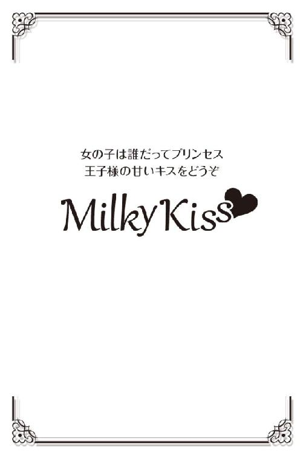

| 傷心王子の愛し方 (Milky Kiss) | |
| 玉紀直 | |
| 株式会社 パブリッシングリンク (2017) | |

傷心王子の愛し方
玉紀 直
第１章 憧れの上司
──それは、とても印象的な光景だった。
霧雨の中にたたずむ彼。
どのくらい前からここにいるのだろう。髪はしっとりと濡れ、額に貼りつく前髪から、雨の雫が形良い鼻梁を伝い落ちていく。
彼が着ているのはライトグレーのスーツ。それが、雨に濡れたアスファルトと同じくらい色濃く見える。全身が湿り気を帯びてしまうほど長い時間、彼はここにいたのだろうか。
そんな神田湊に、牧原明日香は見惚れてしまった。
（神田主任の横顔って、綺麗......）
これぞまさに〝水もしたたるイイ男〟。さすがはオフィスの王子様と異名をとる人だと、明日香は改めて感心する。
しかし、その光景が明日香の脳裏に強く焼き付いてしまったのは、決して雨に濡れる彼がまるでドラマの主人公のように格好良かったからだけではない。
──憧れの上司が、失恋をした決定的瞬間を見てしまったからであった。
六月の第三土曜日。隔週での土曜日出勤は正午が定時になっている。
ランチでもして帰ろうかという同僚の誘いを断ったのは、なんとなく、が理由。
静かに降る雨は、どことなく人をセンチメンタルにさせる。明日香も誰かと騒ぐより、ひとりですごしたい気分だった。
会社が入っているオフィスビルの裏手には、車通勤の社員が利用している月極の有料駐車場がある。明日香はバス通勤なので関係はないが、そこの前はバス停への通り道になっていた。
駐車場へ近づいたとき、出入り口前の車道に一台の車が停まった。そして運転席から、急ぐようにひとりの青年が飛び出してきたのである。
よく見れば、それは今年の春に入社した新入社員の木村だった。さらに彼が駐車場へ向かって叫んだ姿を見て、明日香の足は止まる。
彼は切羽詰まった声で「美和！」と叫んだのである。明日香の視線はもちろん駐車場の中へ向く。
満車ならば分からなかったのかもしれない。週休二日の会社が多いせいか、半分以上が空きスペースになっていて、駐車場の中はよく見えた。
ちょうど明日香からよく見える場所に湊の姿があった。そしてもうひとり、見知った女性の姿がある。
新入社員の遠藤美和だ。小柄でかわいらしい容姿であるせいか、同じビルに入る他の会社の男性社員にも振り向かれる。
そんな彼女の両腕を掴み、湊がなにかを話していた。だが美和は、湊の手を振り切り木村の元へ走り出した。
木村に抱きつく美和。彼女を腕に庇い「主任、申し訳ありません！」と叫ぶ木村。ふたりはそのまま車に乗って走り去ってしまった。
美和は入社当時から湊とは親しげだった。それは、湊が新人教育担当だから、という理由だけではないだろう。オフィスの王子様を見つめる女子社員たちが、ちらちらと様子を窺っては気にしてしまうほどの親密さだったのだ。
かくゆう明日香もそのひとり。ふたりの醸し出す雰囲気から、もしかして付き合っているのでは、とまで想像していた。
それを前提に考えると、とんでもないものを見てしまった気分だ。この状況から察するに、木村が横恋慕をして湊から美和を奪ったのだとしか考えられないではないか。
（王子様が......、失恋？）
信じられなかった。顔も良ければ性格も優しい男を、なぜふる必要があるのだろう。木村がどれほどの男なのかは知らないが、美和の気持ちが分からない。
ただ湊の気持ちを考え、明日香は胸が苦しくなるばかり。
辛いだろうか。悲しいだろうか。よもや彼が失恋をするなど想像もしていなかったが、本人だってふられるなどと思ってはいなかったのではないか。
走り去る車を、ただ黙って見送る彼。物思いにふける姿が、霧雨にかすんでしまいそうなほど儚い。
明日香は湊を見つめたまま駐車場の中へ足を進め、そっと傘をさしかけた。
二十四年間生きてきて、年上の男性に傘をさしかけるなど初めての経験だ。考えてみれば、どこか心ときめくシチュエーションではないか。それを憧れの上司に対してやることになるとは......
「......牧原さん」
自分の傘をさしかけてしまったのだという理由以外で、明日香は湊の声にドキリとする。
いつもは明るく爽やかな声で、明日香の耳を楽しませてくれる湊。彼女の名を呼んだその声が、とても小さく元気がない。
「傘、ありがとう」
弱々しい微笑みを浮かべ、どこかホッとしたような表情をしていた。こんな心細げな顔を、五つも年上、二十九歳の男性にされてしまうとは。不覚にも胸が締めつけられ、母性本能らしきものが疼きだす。
美和に去られたことで感じているであろう寂しさを、埋めてあげることはできないだろうか。そんな気持ちが湧き上がった。
「あの、主任......、元気出してくださいね」
「ん？」
「主任、かっこいいし、女の子に優しいし、いい人なんですから、すぐに次ができますよ。私から言わせれば、美和ちゃんの気持ちが分からない」
湊を慰めてあげたい。明日香はその一心だった。傷心の彼に元気になってもらいたい。どう言えばそれが伝わるだろう。
それを考える間もなく、明日香の口からは自然に言葉が出てしまう。
「こういうのって、日常の何気ないことが癒しになったりするものですよ。美味しいコーヒーを飲んだり、好きなケーキを食べたり、ただぼんやり空を眺めたり、他愛もない愚痴を言ったり。......あ、......もし、愚痴る相手がいなかったら、私に言ってください」
「君に？」
「はいっ。私、主任が元気になってくれるなら、なんでもお手伝いしますから」
ちょっと図々しい申し出だったろうか。咄嗟に思ったことが口に出てしまった。でも本当に、彼のために何かしたいと思ってしまったのだ。
一瞬首を傾げ、視線を斜め上に向けなにかを考えこんだ湊ではあったが、すぐに顔を戻して明日香と向き合った。
「つまり牧原さんは、失恋した僕を慰めてくれるって言っているんだよね？ この解釈で良い？」
「は、はい。あの、主任が元気を出してくれるなら、話し相手でもなんでも」
「牧原さんは明るい人だし。話をしているだけで元気になれるよ。ありがとう、嬉しいよ」
王子様スマイルと言われるふわりとした柔らかい微笑みを向けられ、ドキリと胸が高鳴った。染まりかかる頬を見られるのが恥ずかしくて、明日香は俯いてしまう。
「あの、よろしかったら、傘どうぞ。主任、びしょ濡れだし、風邪ひきます」
「大丈夫だよ。もう帰るし。これ僕の車だし」
湊がポンッとボンネットを叩いた車は、ちょうどふたりが立つ場所の真横に停められている。黒に近いネイビーメタリックのツーリングワゴン。パールがかったその色がとても印象的で、明日香はおもちゃ売り場でミニカーを探したことがある。車自体に興味はないが、それを持っていれば湊に近づいた気分になれるのではないかという思いがあった。
結局それはメーカー限定色なので、同じ色の物は手に入らなかった。とても残念だったのを覚えている。
「よかったら送っていくよ。確か、僕と方向が同じだったよね」
「そ、そんな、とんでもないです。あっ、私、友だちとランチする約束があるんです。それに、主任は寄り道なんかしちゃ駄目ですよ。早く帰って着替えなくちゃ。本当に風邪をひいちゃいます」
ムキになって思わず顔を上げる。湊から意外なことを言われ、動揺のあまり勢いで断ってしまってから少しもったいなかったと後悔が湧いた。
そんな明日香を見て、湊は楽しそうにクスリと笑った。
「うん、分かった。早く帰って着替えるよ」
彼の言葉にホッとする。だがその安堵は長くは続かない。湊の手が明日香に伸び、赤い頬を撫でたからだ。
「真っ赤だね。寒いの？ 牧原さんも早く温まったほうがいいよ。なんなら、待ち合わせ場所まで送るけど」
「大丈夫ですっ。雨のせいか寒いですもんね。やだっ、鼻とか赤くなってません？ はっ、恥ずかしいっ」
反射的に身体を引き、空いている手で鼻を覆ったが、本当は頬を覆うべきだった。赤くなった顔は隠せないままだ。
傘を湊にさしかけたまま離れてしまったので、明日香本人が霧雨にあたる形になってしまった。
すぐに湊が傘のシャフトを掴み、彼女へと戻す。にこりと笑いかけてから運転席側へと歩き出した。
「牧原さんの言うことをきいて、風邪をひかないように帰って着替えるよ。牧原さんも、早く温かい所に行くんだよ」
「は......はい」
「月曜、風邪なんかで休まないように。君が出社しないと困るよ、僕の癒しになってくれるんだろう？」
「はい！」
湊から再度確認してくれたのが嬉しくて、明日香の声も弾む。彼が運転席へ乗り込みエンジンがかかると、明日香は邪魔にならないように車から離れた。
ゆっくりと車が走り出す。その様子を見送っていた明日香は、運転席から湊がバイバイとでも言うように手を振ってくれているのを見付ける。思わず手を振り返しそうになるが、上司に対してそれはないだろうと思い直し、上がりかかった手を抑えて頭のみを下げたのだった。
エンジン音が遠ざかっていくなか、明日香はゆっくりと頭を上げる。傘のシャフトを肩に預け、深呼吸をするように大きく息を吐いた。
「......嘘みたい......」
とんでもない場面を見てしまったおかげで、なんとなく湊に近づけた気がする。
彼が失恋したというのは、もちろんふたりだけの秘密にしなくてはならない。そして明日香は、傷心の彼が立ち直るための手伝いをすることになってしまった。
気晴らしに話し相手になる程度でいいのだろうと思うが、それでも、憧れの上司と仕事とは関係のない約束をしてしまった。そう考えるだけで鼓動が早くなる。
「よしっ。主任が元気を出してくれるように頑張ろう」
気合を入れるため声に出し、張り切って歩き出す。
さっきまで感じていたセンチメンタルな気分も、どこかへ行ってしまったような気がした。
カー用品を中心とした、アウトドア商品を扱う専門商社、株式会社フィールドドライブ。
この分野では大手であり、本社は自社ビルを持っている。各地に広がる支社支店営業所のうち、明日香が勤務するのは、オフィスビルに入る社員数三十名ほどの支店。
彼女はいわゆる一般事務職である。だがその仕事内容は広く、お茶出しや資料作り電話対応などの一般的なものから、見積書や伝票作成、営業の補佐までこなさなくてはならない。
全社員のうち、明日香も含めた十名ほどの女性社員は皆同じような仕事内容の事務職についている。そのせいか、チームワークも良い。
今では不満などまったくないが、昨年の入社当時は、なぜこんな会社に入ってしまったのかと悔んだ時期があった。
入社後、二週間の新人研修期間のことである。
会社の事業内容は、もちろん理解をしていた。どういった分野の商品を扱うのかも分かっている。だが自分は一般事務として入社をしたのだから、事務としての仕事がそつなくこなせれば良いだろう。そう思っていた。
だが、研修の際、重点的に指導されたのは取扱商品についての知識。
車が好きな同期の男性などは、楽しそうだった。しかし明日香は車の免許も持っていなければ車自体にも興味はなく、どちらかといえばインドア派だ。
アウトドアになど縁のない彼女にとって、まさに未知の世界。
カーコロンだ、ホイールだ、ルーフキャリアだ、アタッチメントだなどと言われても、なにひとつ分からない。
自分に必要なのかどうかも分からない知識。なのに覚えなくてはならないことが多すぎて泣きたくなった。どうしたら良いだろう。自分には勤まらないのではないか。
大学時代、エントリーシートの段階で落とされてしまう厳しい就職活動を経て、内定をもらえたのはこの会社だけだった。せっかく選んでもらえたのだから頑張ろう。そう意気込んでいたはずなのに。
その志気は、日一日と下がっていく。
長所に明るい性格と書けるほど自信を持っていたのに、持ち前の元気もなくなり、明日香は会社で笑うこともできなくなっていった。
そんなとき、教育係だった湊が彼女に声をかけたのだ。
『これあげるよ。持って帰って部屋に飾ってごらん』
彼がくれたのは、透明な赤い液体が入ったスクエア型の小瓶。どうやら芳香剤らしい。
こんな芳香剤は見たことがない。明日香は帰宅してから、中栓を開きキャップを戻して出窓の端に置いてみた。
ふわりと香ったのは、とても清々しい果実のような香り。どこかストロベリーに似た芳香だ。
鮮やかなクリアレッドから、強い香りを予想していたのだが、まったく違う。
瓶自体もかわいらしく、香りも良い。見ているだけでなんとなく気持ちが晴れた明日香は、翌日、湊に礼を言い、あれはどこの製品なのかを訊ねた。
すると、湊は芳香剤よりもっと爽やかな笑顔で答えてくれたのだ。
『あれはね、うちの会社で扱っているカーコロンだよ。主に女性をターゲットに作られたんだけど、意外と若い男性に人気なんだ。瓶の下にクッションタイプの両面テープが付いていただろう？ あれで固定するんだよ』
『濃い色から想像していたのとは違って、香りがサッパリしていたので驚きました。普通の部屋に置いても映えますね』
『そうだね。ただ本来は車の中っていう狭いスペースを考えて作られたものだから、芳香剤としての役割を求めるなら普通の部屋には適していないんだ。でも、インテリアとしてなら、目を引くだろう？ どうだった、見ていて』
『出窓に置いたんですけど、そこが華やかになったような気がして、かわいいし、凄く気分が良かったです』
『車内っていうのはね、ある意味持ち主の部屋なんだよ。自分が好きな物や気に入った物があると嬉しいだろう？ 車も同じ。自分が好きなパーツや欲しい設備があると嬉しいし楽しい。僕たちはね、お客様にそう感じてもらえるようにお手伝いをしているんだ』
『お手伝い......』
『営業をする僕たちは店には出ないから、直接エンドユーザーに関わるわけじゃない。けれど、ひとつの商品に関して話しあったり売りこんだりしていると、凄くやりがいを感じるんだよ。この商品を買ってもらうことで、どのくらいの人たちが車に乗りながら明るい気持ちになってくれるんだろうって。そう思えば、新商品やあまり興味のないものの勉強も苦にならない。──牧原さんも、そう思ってくれると良いな』
──彼は、気づいていたのだ。
教育係として明日香を見ていて、一見真剣に取り組んでいるように見える様子の裏に、どうしてこんな興味のない物まで覚えなくてはならないのだろうという疑問があることを。
車やアウトドアに無理に興味を持てと言っているのではない。
ひとつの商品を流通させることによって生じる喜びや満足、彼女にはそれを想像して感じ取れるようになってほしいと思ったのだ。
『マニアになる必要はないんだよ。でも、うちの事務はそれなりに取扱商品を覚えておかなくちゃ仕事にならない。伝票も切れないようじゃ勤まらないからね。よし決めた、研修が終わったら、僕、牧原さんにたくさん伝票回すからね。勉強しといてよ』
『しゅ、主任っ』
笑いながらではあるが、それは脅しであり、明日香を思うが故の叱咤だった。
湊の指導は男女分け隔てなく、誰に対しても丁寧だ。主任という役職を持ち、五つ年上だが、威張ったところがない。同じビルの他社女性からも「オフィスの王子様」と噂されてしまうほどの美丈夫なので、もちろん社内の女子社員にも一番人気だ。また、その気さくさで、年下の男性社員にも慕われている。
そんな湊に、いつしか明日香も憧れるようになっていた。
かっこいいから、優しいから、などというだけの理由ではない。人柄はもちろん、湊の仕事に対する熱意が明日香の気持ちを動かした。
一般事務の自分にできる仕事は限られている。だからこそ、湊が教えてくれた気持ちに応えられる仕事をしたい、彼のためにも頑張りたいと思うようになっていたのだった。
彼がいなければ、明日香は研修の途中でリタイアしていたのではないかとさえ思う。
──そして今日、そんな彼と大きな約束をしてしまった。
傷心の渦中にいる憧れの人を元気づける。そんな役目をもらったのである。
これは、入社当時自分を元気づけてくれた彼に恩返しができるチャンスだと思った。
第２章 主任の癒し役
「牧原さん、おはようございます」
週明け月曜日。始業前の清掃を終えた明日香に声がかかる。フロアモップを戻した清掃用具入れの扉を閉めながら振り向くと、背後には恐縮して小さくなった美和が立っていた。
「少し遅れてしまいました......。お掃除、牧原さんに全部やらせてしまって、すみません......」
身長こそ、一五七センチの明日香と同じくらい。だが、彼女のほうが華奢なせいか、肩をすくめて控えめな態度をとられてしまうと明日香よりも小さく見える。
フィールドドライブの女子社員は、制服着用が義務付けられている。紺に近い青のハコヒダスカートにグレー系チェック柄のベスト。あまり特徴らしきものもない制服ではあるが、美和が着ていると初々しくかわいらしいものに見える。またそう見えてしまうのは、彼女の性格から醸し出される印象なのかもしれない。
先輩社員を下の名前で呼んでくる新人が多い昨今、美和は礼儀正しく苗字で呼ぶ。
そのせいか、今のように朝の清掃当番に遅れたのだとしても、文句どころか注意もしづらいのだ。おまけに美和は、見ている限り他人に対して積極的に関わるタイプではない。にもかかわらず、明日香のことは慕っているようで、よく声をかけてくる。
朝の清掃とその日のお茶出しは、女子社員の当番制。ふたりひと組で行われ、女性が少ないことから毎回コンビは決まっている。
新人は先輩社員と組むのが常。美和が入社してからは、明日香を慕っているからという理由で彼女が相棒になった。
「いいよいいよ、たまには。すぐに終わったし」
「本当にすみません......。あの、お詫びにわたし、朝のお茶はひとりでやりますから」
「それこそ大変だよ。コーヒーの人とお茶の人、分けなくちゃならないんだよ？ お砂糖入れる人と入れない人はいるし。全部覚えてる？」
「......すみません」
何度もこの調子で謝られてしまうと、なんとなく明日香のほうが悪いような雰囲気になってしまう。清掃用具入れは、お手洗いの出入り口横のつきあたりに設置されている。奥まって見えづらいながらも、廊下を通る社員たちの目につく場所だ。
そんな所でさかんに恐縮する後輩とふたりで立っているというのは、はたから見て苛めているようには見えまいか。
「本当にいいって。そんなにしょんぼりしないでよ。美和ちゃんはいつも時間にきっちりしているのに、今日は珍しいね。夜更かしでもしたのかな？」
ひとまず申し訳なさげな美和をなんとかしなくては。軽い話題で切り抜けようとしたが、最後のひとことは余計だったかもしれない。昨日のデートでも思いだしたのか、美和はポッと赤くなり顔を伏せてしまった。
「す、すみません......、そんな私的なことで......」
「だから、謝らなくていいよ。私のほうこそ、焦らせちゃってごめんね」
明日香は、美和の気持ちを宥めようとして、彼女の腕をポンポンッと叩いた。こんな風に過剰に反応されては、明日香のほうが焦ってしまう。
自分にとって憧れの主任をふった美和だが、性格は悪くはないのだ。
彼女が木村とすごしたのであろう週末に、湊はどんな気持ちでいたのだろう。そんなことを考えると、胸が締め付けられる思いがした。
できれば今日は、湊に美和を近づけたくない。湊も辛いだろうし、美和だって気まずいだろう。
お茶出しやなにか報告しなければいけないことなどがあったときは、できるだけ自分が対応しよう。明日香はそう心に決めた。
しかし、事はそう上手くはいかないものだ。美和を促し廊下に出たところで、ちょうど前方から歩いてきた湊と鉢合わせしてしまった。
「しゅ......、しゅにっ......」
「ああ、牧原さん、おはよう。──遠藤さんも、おはよう」
立ち止まった湊は、いつも通りの爽やかな笑顔をくれる。美和に話しかけたときだけは、かすかに声が沈んだような気がした。
いきなり湊が現れて驚いたが、美和も驚いたのだろう。彼女は咄嗟に「あっ、湊く......」と言いかけて手で口を押さえた。
（湊君、か......）
その親しげな様子が切なさを誘う。湊が気にしないよう、明日香は美和から注意を逸らそうとした。
「おはようございます、主任、今、お掃除が終わって後片づけしていたんです」
「後片づけだったの？ 女の子ふたりでトイレの方向から出てきたから、出社してから化粧する派なのかと思った。今度待ち伏せしてスッピン見てやろうかと思ったのに」
「やっ、やめてくださいよー。恥ずかしいですっ」
慌てる明日香を見て、湊が笑う。注意逸らし作戦は成功かと思いきや、彼は自ら美和に声をかけてしまった。
「そうだ、遠藤さん、土曜日大丈夫だったかい？ 風邪とかひかなかった？」
「あ......はい、大丈夫です。あのときは申し訳ありませんでした」
「いいや。僕も悪かったね。あんな所で引き止めて」
「いいえ......」
湊は明日香が事情を知っていると分かっているせいか、会話に遠慮をしない。美和は少々明日香の存在に気を遣っているようだが、一番気分が落ち着かないのは明日香のほうだ。
はたから見れは女子社員がふたりで上司と朝の挨拶をかわしている光景ではあるが、会話の意味を知っている者からしてみれば、気まずさを感じることこの上ない。
「なにかあったら遠慮なく言って。ないのが一番だけど」
「はい、ありがとうございます。色々とすみませんでした」
この意味深な会話は、いつまで続くのだろう。明日香は平気な顔をしながらも、つい周囲をきょろきょろと見回してしまう。心配をするのはお門違いかもしれないが、この会話に聞き耳をたてている者がいないか気になってしまうせいだ。
すると、そんな明日香に、やっと湊から声がかかった。
「牧原さん、お茶を淹れてくれるかな」
「あ、はい。コーヒーですね」
「いいや。お茶のほう。できれば緑茶が良いんだ。ちょっと風邪気味でね。熱いの頼むよ」
「風邪......」
明日香はハッと思い立つ。土曜日、霧雨に濡れていた湊。あのせいで彼は風邪をひいてしまったのではないか。
心も身体も冷やしたあげくに発症してしまった風邪。これを温めて癒してあげるのは、自分の役目だ。
「分かりましたぁっ！ 熱いの淹れます！」
使命感に燃え、張り切って答えた明日香は、ついでとばかりに美和の腕を掴み、給湯室へと急いだのである。
「あれ？ お茶？ 誰の？」
給湯室でお茶を淹れていると、同期の由香が声をかけてきた。
彼女は湯気のあがっているコーヒーカップをシンク横の台に置き、棚からコーヒーフレッシュを出す。
コーヒーは美和が配っているものだろう。砂糖一杯程度の個人的嗜好には付き合うが、それ以外は自分で調節するのが決まり。由香のようにいつもはブラックだが、たまにはまろやかにして飲みたいなどという場合も、また然り。
「うん、神田主任。今日はお茶がいいんだって」
「それにしたって、緑茶でしょう？ 手のかかる物を頼んでくれたよね。主任って、あんまり女の子に手のかかることさせない人なのに。珍しーぃ。たまにお茶って言っても、多数派に合わせて番茶なのに」
そう言って由香が指をさした先には、お茶用のケトルが置かれている。これで一気に番茶を作るので、「お茶」といえばこれのこと。一方で緑茶は別に淹れるため、ひと手間別の仕事になるのだ。
「風邪気味らしいよ。熱いの飲みたいんだって。ほら、緑茶ってさ、カテキンに殺菌作用があるから風邪に良いとかいうじゃない」
傾けていた急須を戻し、湯呑みを小さなトレイに載せる。急須を洗おうと手を伸ばすと、由香にポンッと肩を叩かれた。
「風邪かあ、主任可哀想ー。じゃあ、あっついうちに持っていってあげてよ。オフィスの王子様が風邪で休みでもしたら、目の保養がなくて寂しいもんね。急須、あたしが洗っておいてあげる」
「ありがと。じゃあ、お言葉に甘える」
ミーハーな王子様のファンに見送られ、明日香は給湯室を出る。途中、コーヒーを配り終えた美和とすれ違い「おつかれー」と声をかけるが、明日香の視線はすぐ一点に釘づけになった。
視線の先では、湊が電話中だ。早々に取引先と話をしているらしく、受話器を肩に挟み、手には製品カタログ。忙しなくページをめくっては話を進め、片手でパソコンのキーボードを叩く。
なにか難しい案件なのだろうか。眉を寄せるその表情にドキリとした。
彼のイメージとしては、パソコンに向かい、清々しい雰囲気を漂わせながらキーボードを叩く絵が当たり前のように浮かぶ。実際、由香なども「男臭くない爽やかさが好き」などと言う。
だが明日香は、ふとした瞬間に垣間見える、湊の男らしい表情も好きだ。
新人研修のとき、必死になる明日香に色々と教えてくれた、真剣な彼を思い出してしまうせいかもしれない。
（うわぁ、朝からいいもの見ちゃったなぁ）
役得とはこのことか。立ち止まったままポーッと湊を眺めてると、彼の視線が上がり、目が合った。
ドキリとした瞬間、腕が震える。わずかにお茶を零してしまったのではないかと気にしつつ、見つめていたことを悟られないように、明日香は慌てて湊の元へ向かった。
「主任っ」
しかしそのとき、横から入りこんできた、彼女と同期の男性社員に先を越されてしまった。
おまけに明日香に向けられていた視線も、彼に向いてしまったのである。
せっかくの良い気分が台無しだと、睨みつけてやりたい気分でチラリと一瞥すると、彼は湊に大きく頭を下げた。
「すみませんでした！ あの......メーカーは、なんて......」
「早急に、直接店側へ正規の部品を納品してもらうことで話をつけた。メーカーの担当者が向かうから、到着時間の連絡が来たら君もすぐに向かって」
「は......はい......」
「出荷違いをしたメーカーだけのミスじゃない。特注品であったのに、こっちのチェックも疎かだったってことだ。ホイールナットのサイズを間違えるなんて、論外だ」
「すみません。......ですが、何度もメーカーに......」
「僕にする言い訳を考えるより、納期が大幅に遅れて待たせてしまった店やお客様に伝える謝罪の言葉を考えたほうがいい」
男性社員は言葉なく肩を落とす。カー用品の部品は、メーカーの都合ですぐに用意できない物も多く、そんなときは納品まで時間がかかりがちになる。
そこに出荷ミスやチェックミスが重なれば、最悪の事態を招くだろう。
湊が厳しい表情をしていた理由がやっと呑み込めた。真剣な顔がかっこ良いなどと浮かれている場合ではなかったらしい。
男性社員のスーツから携帯の着信音が鳴り響く。携帯を取り出し、相手を確認した彼の表情に緊張が走ったのを見て、湊が口角を上げた。
「時間の打ち合わせが済んだら、教えて。僕も一緒に行く」
「は、はい！ ありがとうございます！」
まさに助け舟。上司という頼もしい同行者を得た彼は、意気揚々と携帯を耳にあてながら自分のデスクへと戻っていった。
出社早々部下のトラブルを引きうけてしまったようだが、解決する手応えはあるのだろう。湊の表情から厳しさが消え、彼は安堵するように息を吐く。
（やっぱり......、朝からいいもの見ちゃった......）
ただカッコいいだけの王子様とは違う、湊の一面。明日香が憧れを持ち始めるきっかけとなった上司としての頼もしい彼に、ついつい見惚れてしまう。
すると、湊が明日香に顔を向けにこりと微笑む。ドキリとした瞬間、またもやトレイが揺れた。
「お茶、ありがとう。ごめんね、手間かけさせて」
「いいえ。そんなことないですよ。朝から大変でしたね。お疲れ様です」
湯呑みを取ろうとすると、お茶が熱いせいで湯呑みもかなり熱くなっている。指に伝わる熱に思わず「熱っ」と手を引いてしまった。
すると湊がスーツのポケットからハンカチを出し、自ら湯呑みをくるんで取った。
「大丈夫？ 火傷しなかったかい？」
「平気です。すみません、取っていただいちゃって」
「僕のほうこそごめん。熱いのなんて頼んだから......」
湊はそのまま湯呑みに口をつけ、ひとくちすする。ハアと息を吐き、笑顔を見せた。
「でも美味しいよ、ありがとう。身体の中に温かいお茶がじんわり沁みていく気分だよ」
「良かった。主任、大丈夫ですか？ 風邪気味って、多分土曜日に雨に濡れたせいですよね。やっぱり風邪を......」
「ああ、あれね。嘘」
「は？ 嘘？」
明日香は目をぱちくりとさせる。トレイを両手に持ったまま、唖然と湊を見つめた。
彼は再び湯呑みに口をつけるが、説明してほしそうな明日香を見て照れたように笑った。
「いつもと違うお茶を淹れてもらえるのって、なんだか特別感があるだろう？ その人のためだけ、みたいな感じでさ。慰めてくれるんだろう？ だからちょっと甘えてみた」
胸がドキリと高鳴り、次の瞬間締め付けられる。
女性が「あなたの特別になりたい」と言うシーンを、漫画やドラマなどで見たことがある。男性もこんなセリフを使うものなのだと初めて知った。
（やっ......ちょっと......、かわいい......）
はからずしも男性を、それも憧れ続けた人を、かわいいと感じてしまう。
だがその気持ちの裏には、失恋したばかりの寂しさを、誰かに特別扱いをされているという満足感で埋めたい。そんな切ない思いがあるのではないだろうか。
（主任......、辛いんだ）
浮かれかけていた気持ちが、切なさに変わる。明日香は改めて、湊が癒されるならば熱いお茶だろうと紅茶だろうと、望む物をなんでも特別に淹れてあげようと思った。
ふと、トレイを持つ指が濡れてしまっていることに気づく。視線を落とすと、トレイの上がかなり濡れていた。湊にお茶を出す前、彼と目が合って二度も腕が震えた。おそらくあのときにお茶を零してしまったのだろう。
もしやと思い湊に目を向けると、湯呑みをくるんだハンカチの下が濡れていた。トレイに触れた部分が零れたお茶を含んでしまったようだ。
「主任、ハンカチ......」
「ん？ ああ、お茶で濡れてしまったのかな」
「すみません。私、洗って乾かしてきますから」
「いいよ、そんなの。お茶くらい気にならないよ。ジュースじゃないんだから」
「でも、主任は外勤に出るでしょう。持って行けませんよ」
明日香は即座に自分のハンカチをスカートのポケットから取り出し、湊へ差し出した。
「よかったらこれ、使ってください。まだ使っていませんから。男の人が持っていても大丈夫だと思うんで」
それは、薄いグリーンのハンカチ。柄といえるものはサイドに入った縁取り線くらい。色は女性向きかもしれないが、男性が持っていてもおかしくはない。だが明日香は、言ってしまってからこれは少々図々しい申し出だったかとすぐに後悔した。
出ていた手を引っこめようとする。その瞬間、湊がハンカチを掴んだ。
「いいの？ じゃあ、借りるね」
「はい......」
受け取る意思を示されているのに、奪い取るわけにはいかない。明日香が手を放すと、湊はハンカチを顔の横に掲げた。
「ありがとう。なんだか照れるけど嬉しいな。女の子にハンカチを貸してもらうなんて。汚さないように気をつけるから」
「いえ、そんな物でよかったら、バンバン使ってください。ハンカチは汚れて当然のものですよ。どうぞどうぞ」
「洗って返すよ。借りものだって忘れて汗とか拭いちゃうかもしれないから」
「洗うなんて、そんなことしなくていいですよ。そのまま返してくださいっ」
「......そういう趣味があるの？」
「そういう趣味って、どういう趣味ですかっ！」
冗談で言ったのだとは思ったが、つい慌ててしまう。湊の手に触れたものだから、本当にそのまま返してもらってもいいと思ってしまったのは確かだ。
明日香の反応が面白かったのか、湊は楽しげに笑い、もう一度礼を口にしてハンカチをポケットに入れた。
彼の笑顔を見ると、明日香も嬉しくなる。クスクスと笑いながら、湯呑みに巻いていた湊のハンカチを受け取った。
（主任の笑顔、やっぱりいいなぁ......）
憧れの人が笑ってくれている。自分と話して、楽しそうな顔をしてくれている。
それを感じられることが、明日香はとても嬉しい。
湊が本心からこの笑顔を取り戻してくれるよう、彼の心の癒しになれるよう頑張ろう。
明日香は改めて、そう思った。
第３章 オフィスの王子様
「牧原さん、資料のチェックが終わったから、コピー頼むよ」
ご指名が入った瞬間、明日香は反射的に立ち上がる。「はい、分かりました」と真面目に返事はしたが、内心は動揺を隠すのに必死だった。
周囲からは、なんとなく納得がいかない女子社員たちの視線と、興味半分に面白がっているような男性社員たちの視線が突き刺さってくる。
こんな視線にさらされるのも、ここ数日で明日香の仕事環境が大きく変わってしまったせいだ。
──そして、その〝原因〟が、目の前で微笑む。
「午後から使うから、二十部分作っておいて。牧原さんは資料作りが早いから助かるよ」
湊は十枚ほどの資料を明日香に渡すと、さらににこやかに言い渡した。
「そうだ、午後から行く取引先、牧原さんも補佐として同行してくれないかな。女の子がいると場も和むし」
「そうですか......？ 主任のお力になれるなら......」
「なるよ。もちろん」
にっこりと繰り出される、王子様スマイル。数日前は、この笑顔が自分だけに向けられているのだということに、ときめきと感動を覚えたというのに。
今はそこに、かすかな戸惑いを感じるようになってしまっている。
なんといっても、オフィスの王子様に毎日集中指名を受けているのだから......
「分かりました。では、正午までに仕上げます」
「よろしく」
受け取った資料を手に、明日香は速足でコピー機へと向かう。直後、背後から追撃を受けた。
「あ、ごめん、その前にお茶くれる？」
「はいっ、すぐに」
笑顔を引き攣らせながらも、ひとまず書類をデスクへ置く。明日香は周囲の目を気にしないふりをして給湯室へと向かった。
（あーっ、なんか気まずい）
そう感じるのは、湊に対してではない。その他の社員たちに対してである。
湊の力になろう。そう決意を固めたまでは良かった。
彼が元気になるよう。話し相手になってあげたり、笑わせてあげたりすればいい。最初明日香はそう思っていた。
湊も同じように考えていたらしく、以前よりも頻繁に明日香に話しかけてくる。
いや、話しかけすぎなほど、構ってくる。
『牧原さん、お茶くれる？』
朝、昼、夕、お茶を頼むのは必ず明日香に。それも、ひと手間かかる緑茶を希望。
『牧原さん、コピーお願い。それと、この伝票切っておいて』
雑用的な仕事も、指名付きで回し。
『牧原さん、メーカーの営業と会うから、一緒に行こう』
重要な仕事の補佐にも指名がかかる。
挙句の果てに......
『ビルの一階にある喫茶店で、アイスのサービス券もらったんだ。お昼にでも食べに行こうか。ついでにご飯奢るから』
と、数日前までの明日香なら気絶してしまいそうなほど嬉しいお誘いまで受ける。正直なところ、今だって嬉しい。決してイヤではない。
だが、困ったことがひとつある。
周囲の目だ。
美和以外の女子社員全員から、無言の不満を示す視線が突き刺さってくる。どうして明日香ばかりが、と。
今までは親しかった美和に視線が行きがちだったが、すでにもう彼女は気にかけられてもいない。それほどまでに明日香への贔屓指名は目立っているのだった。
部下はもちろんのこと、女子社員に格差をつけない人気主任。そんな彼が突然ひとりを指名し始める。社内中から注目されてしまうのは当然だ。
おまけにしょっちゅう湊に連れられてビルの中を移動していれば、他部署の女性社員にまで不審そうな目で見られてしまう。それは、最近いつも王子様にくっついている女がいるという疑惑の目に他ならない。
「複雑......」
急須に茶葉を入れながら、溜息と共に漏れる本心。湊と親しくなれるのは嬉しいし、会社に来る張り合いも出る。これでこの気まずささえなければ最高の環境だろう。
幸い、明日香のことばかり構うようになってから、湊が沈んだ表情を見せたことはない。仕事で美和に話しかけていても、変わった様子も見えない。それはそれで、癒し役として成功している証拠なのだから良いことである。
「主任が、あんなに屈託ない人だなんて思わなかった」
色々と悩んではみても、結局は嬉しいに落ち着く。
憧れの人に懐かれている。いや、頼りにされているのだから。
「あーすーかーぁ」
「きゃぁっ」
お湯を注いでいる最中に、背後から恨みがましいトーンの声がかかる。肩越しににゅっと出てきた二本の腕が明日香の首に巻き付き、彼女はビクッとした拍子にケトルのお湯を急須から溢れさせてしまった。
「ちょっ、ちょっとぉ......」
ケトルを置きながら、その腕を押さえて振り向く。そこには怪訝そうな表情を浮かべる由香の顔があった。
「ちょっと由香、びっくりするじゃないの。お湯こぼしちゃったよ。火傷するでしょう」
「そうしたら主任が『手、どうしたの？ 痛い？ ごめんね、熱いお茶なんか頼んだから』って言ってかわいがってくれるんじゃないのぉ～？」
「なによそれっ」
由香の予想に苦笑いをして、明日香は彼女の腕を外させる。身体を返して向き合うと、由香は腕を組みながら溜息をついた。
「今日こそ訊くけど。どうなってんの？」
「どうって？」
「主任よ。明日香ばっかり指名してるじゃない」
「そ、そう？ でも、仕事とかだよ。最近ほら、新規用の資料作りが多いでしょう。私、あれ、得意だしさ」
「仕事だけじゃないでしょうが。一緒にお昼に行ったり、自動販売機の前でジュース飲みながら休憩していたり、その辺りのどこが仕事と関係あるのよ」
「あー、えーと......」
「きちんと真相を白状しなさい。皆が気にしてるんだからね。誤魔化したりしたら、ただじゃおかないから」
「ただじゃ、って......」
じゃあ、いくらか払ったら許してくれるの、などとオーソドックスな茶々を心の中でいれてみる。そんなものは口に出せる雰囲気ではない。ふざけようものなら、オフィスの王子様を崇拝する彼女からの報復が待っている。
由香は腕を組んだまま身体を乗り出し、怯む明日香の顔をわざと上目遣いに覗きこんだ。
「単刀直入に訊くけど。もしかして、付き合ってるとかなの？」
「ないないないないっ、それはないっ」
「じゃあ、なんなのよ」
「あ......」
言葉に詰まる。
言えるものか。
主任が失恋をしたから、元気になるための手伝いをしている、なんて彼のプライドを守るためにも絶対に言うことはできない。
「じ......実はさぁ、このあいだ、どっちがじゃんけんに強いかって話になって......。自信があったから、絶対に私だって言い張ったんだよね。でも主任も、絶対に自分だって言い張ってさ......。じゃあ勝負して、負けたらしばらく相手の言うことをきくこと、なんて約束しちゃってね。まあ、結果、私の惨敗でさ。で、主任に色々と仕事を回されているわけ。いやー、仕事ができる男はじゃんけんも強いわ」
「すっごく嘘臭い」
──明日香は二の句が継げない。
分かっている。我ながら、もう少し上手い言い訳はできないものかと思ってしまうほどだ。
だが明日香の必死な様子は伝わったのかもしれない。由香はハアッと息を吐くと、身体を戻し組んでいる腕を解いた。
「まあ......ひとまず、皆には、そう言っといてあげる」
「由香......」
「でもさ、そのうち、ちゃんと教えてよね。......怒らないから」
「うん......」
曖昧な返事をする明日香を残し、由香は「じゃぁ」と手を上げて給湯室を出ていく。彼女の姿が消えると、明日香は視線を下げた。
「教えるもなにも......、そんな関係じゃないし......」
由香はまだ疑っているのだ。湊と明日香が、上司と部下を超えた関係になっているのではないか。またはなりかかっているのではないか、と。
自分の役目は、湊の傷が癒えれば終わり。彼が失恋の痛手を克服することができたなら、任務終了なのだ。
「こんなのは、少しの間だけだし」
そんなことを呟いてしまうのが、我ながら情けない。ゆっくりと身体を返し、お湯を入れて放置してあった急須を見て苦笑いを漏らした。
「淹れ直さなくちゃ......」
苦い失恋を忘れようとしている人に、苦いお茶を飲ませるわけにはいかない......
とはいえ、湊の態度については明日香も気になっていたところである。湊は、いったいどういうつもりでわざと目立つように明日香に声をかけてくるのか。
良い機会だ。せめて仕事以外の要件では、あまり目立たないように話しかけてほしいとお願いをしてみよう。
その日の午後。湊の補佐として取引先を訪れた帰りに立ち寄ったコーヒー専門店の駐車場で、明日香は意を決して口を開いた。
「あのっ、主任っ」
「なんだい？ あ、もしかして、キャラメルフレーバーよりメープルフレーバーのほうがいい？」
湊は明日香にキャラメルフレーバーのほうのカップを渡そうとしていたが、もう片方の手に持っていたメープルフレーバーも差し出した。
「どっちもトールサイズだし。好きなほう選んでいいよ」
ひとまず明日香に両方渡し、彼は運転席に腰を落ち着けドアを閉めた。
本当は店内でひと休みと考えていたようだが、終業時間間近であることから明日香の退社時間を気にしてくれたのだろう。車中で飲みながら帰ることにしたのだった。
フレーバーを気にするより、もっと気にすべきことがある。明日香はよく見もせずに片方を湊へ戻す。すると彼は楽しげに笑った。
「メープルのほうが好きなの？ 覚えておくよ。じゃあ、ついでにこれ」
コーヒーを返して空いた手に持たされたのは、透明のラッピングパック。個包装になった焼き菓子が三個ほど入っている。
「ミニワッフル。メープル味なんだ。味が重なっちゃうけど、大丈夫？ 牧原さんの資料のおかげで話し合いも上手くいったからお礼に」
「そんな、別に私、資料作っただけで......」
「少なくとも場は和んでたし、話もスムーズに進んだ。あそこの担当者、いつもは口をへの字に曲げてきつい顔しているのに、今日は口が真一文字だったからね」
「そうなんですか？」
「時々唇の端が上がっていただろ？ なんだか僕も凄く気分が良かった。ありがとう」
にっこりと顔にいつもの頬笑みが広がる。
こんな笑顔を見せられ、おまけに「ありがとう」の言葉とお菓子までもらってしまった。どうにも注意などしづらい状況である。
だがやはり、このままにしてはおけない。明日香はワッフルの包みを膝に置き、両手でコーヒーのカップを持つ。
「ですが......、やっぱりわざわざ私を同行させる必要はなかったような......」
「ん？」
コーヒーに口をつけながら、湊が視線を向ける。彼の顔が見づらい。明日香は両手で持ったコーヒーのカップを膝に置き、話を続けた。
「主任は、普段補佐をつけて行動する人じゃないし......、驚いてますよ、社のみんな......」
「そうかな？ でも仕事だし。そんなに驚くことでもないんじゃないかな？」
「で、ですけど、......その、最近私にばかり主任の仕事が回ってくるし、お茶淹れとか、その他も......。休憩のお供とか......」
「うん？」
「最近になって急に、だから......、皆が驚いていて、......ですから......」
「それは、あまり調子にのって君に構うな、っていうこと？」
「いえ、そんな意味ではなくてですね......！」
なんと言えば良いだろう。これでは湊に話しかけられて迷惑だと言っているようにも聞こえるのではないか。
明日香は慌てて顔を上げる。途端に寂しげな表情をする湊と目が合い、ドキリとした。
「言われてみれば、そうかもしれない」
心なしか彼の声が沈んでいる。湊は明日香から顔を逸らし、カップをドリンクホルダーに置く。大きく息を吐きながら運転席のシートにもたれかかった。
「ちょっと調子にのっちゃったかな。牧原さんが、優しいから」
「そんな、あの、優しい、なんて......」
「優しいよ。とても献身的に、僕に付き合ってくれる」
「あの......」
「牧原さんといると楽しいんだ。君の明るい顔を見ていると元気になれるっていうか、癒される」
最後の言葉を口にしながら、湊がこちらに顔を向ける。切なげなその目に、明日香は胸が締め付けられる思いがした。
（そ、そんなっ、置き去りにされた仔犬みたいな目をしないでください！）
そんな顔をされてしまうと、明日香はいたたまれなくなる。
「元気になれるからって君に頼りすぎて、もしかして嫌な思いをさせているのかな。だとしたら......、ごめん」
「いえ、あの......」
下手に出られ、元気になれるからを強調されて、明日香はにわかに焦りだす。
（私の役目はなんだった？ 主任との約束はなんだった？）
湊が元気になれるならば、なんでも手伝う。そう言ったのは明日香だ。何気ない日常にこそ癒しはある。日常から感じられる癒しのひとつになろうとしたのは、明日香自身ではないか。
彼女と一緒にいて、湊は癒されると言ってくれているのだ。
「......だから......、もっと元気になれるように、お付き合いしますから！ なんでも言ってください、って......言いたかったんです！ 驚いている人たちもいますけど、気にしないでいきましょう、って！」
いささか苦しい言い逃れではある。しかし湊はあまり気にしなかったようだ。目をぱちくりとさせたものの、すぐに微笑み、明日香の膝の上のワッフルの袋を摘まみ上げた。
「ひとつ、もらっていい？」
「はい、もちろんです。一緒に食べましょうよ。美味しいものは、誰かと一緒に食べたほうが美味しいんですよ」
気を取り直し、明日香はコーヒーに口をつける。メープルの甘い香りが鼻腔をくすぐり、それだけでも気持ちが明るくなる。
明日香が香りを堪能しているあいだに、湊はワッフルの袋を開ける。個包装からひとつ取り出し、自分で食べるのかと思えば彼はそれを明日香の口元へ運んできた。
「はい、どうぞ」
湊は、まるで他意はないというようににこやかに言うが、明日香は驚いて目を見開く。状況的にこのまま食べさせてもらうのが正しいのだろうか。
空気を読むならばそうすべきだ。手で受け取ってしまっては、彼の好意を無下にすることになる。
パクリと、控えめにワッフルにかぶりつく。くすぐったげに微笑む湊に見惚れそうになるが、恥ずかしさを誤魔化すため、すぐさまワッフルを自分の指で摘まんだ。
「美味しいですよ、主任」
「じゃあ、僕も食べようかな」
もうひとつ手に取り、残りのひとつを明日香の膝に戻した湊は、個包装を開いて今度こそ自分の口へ運んだ。
「うん、美味しい。実は、たまに自分で買って食べるんだ。でもなんだか今までで一番美味しいような気がする。牧原さんの言う通り、美味しいって言ってくれる人と一緒に食べると、本当に美味しいね」
「はい」
普段なら数口でなくなってしまうほどの小さなワッフルだ。湊の前で大きな口を開けるのがためらわれたので、明日香は少しずつ口に入れていた。すると、ワッフルを摘まんでいる指を湊がつんっとつついた。
「小鳥みたいな食べかたするんだね」
一気に頬が熱くなった。メイクをしていてもこれでは湊に気づかれてしまうだろうと思って、明日香は俯こうとする。──だが、できなかった......
楽しげな微笑みを自分に向ける湊に、見惚れてしまったせいだ。
彼もしばらくそんな明日香を見つめていたが、コーヒーを飲むついでに顔を逸らし、そして腕時計を確認した。
「そろそろ行こうか。走りながらだけど、飲める？ 大丈夫？」
「はい、大丈夫です」
コーヒーのカップを置き、エンジンをかけ、シートベルトを引く。そんな湊の姿から、明日香は目が離せない。
コーヒーのフレーバーも、ワッフルのメープルも、湊のくれる甘さには太刀打ちできない。
それだけが、彼女の心に溶け込んでいった。
第４章 恋に傷付く者たち
「主任ー、おはようございますー」
晴れやかな声をあげ、明日香はビルに入っていこうとしていた湊へと駆け寄った。
「おはよう、牧原さん」
「聞いてくださいよー。朝、バスの前に猫が飛び出してきて、急停止。びっくりしました」
「猫、大丈夫だったの？」
「見ていた乗客が、一斉に「猫ー！」って叫んだんですよ。運転手さんが急停止したけど、猫も逃げて無事でした。「お客様、猫さんは無事です！」って運転手さんが叫んで、バスの中が拍手喝采の渦でした」
「なんだ、なんだ？ 作ってない？」
「作り話じゃないですっ」
ふたりでアハハと笑いながらエレベーターホールへと向かう。エントランスには同じ社の社員や湊を知る他社の社員などもいたが、明日香は気にせず彼の横を歩く。
気持ちが吹っ切れると、度胸がつくものである。
自分は悪いことをしているわけではない。湊の心を癒してあげるために一緒にいるだけなのだから。
湊が失恋をするという衝撃的なシーンを見てしまってから、二週間あまりが経とうとしている。
仕事もお茶淹れも、相変わらず明日香指名が多く、社員たちもいい加減慣れた様子。由香などは、そろそろ明日香が羨ましい報告をしてくれるのではないかと勘繰っている。「日曜なにしてた？」「最近夜とか出かけてる？」などと頻繁にカマをかけてくる。
「そうだ、今日は午前中からずっと外勤に出たままになると思うんだけど、お昼すぎには戻れると思うから、午後のお茶のおともに、いつぞやのメープルワッフル買ってきてあげるよ」
「本当ですか？ わー、楽しみです」
「また、小鳥みたいに食べてくれるのかな。僕も楽しみだ」
「しゅ、主任っ」
エレベーターを降り、廊下を歩きながら笑い合う。湊を見ていると、失恋の痛手はすっかり癒えたのではないかと思える。
湊の心が元気になれば、明日香の役目は終わり。彼の傷が癒えるのは嬉しいが、それを考えると少し寂しい。
「なんだろう。騒がしいね」
湊の指摘で、明日香もオフィスの様子がおかしいことに気づく。出入り口は両開きのガラスドアなのだが、内側に女子社員が多数固まっている。
誰かを取り囲んで話をしている様子が窺える。かすかに聞こえる声は歓声のようにも聞こえた。
湊の先に立ってドアを開けると、いち早く明日香を見付けた由香が近寄ってきた。
「主任、おはようございます。......おはよう、明日香、ちょっと聞いてよ」
まず上司に挨拶をした後、由香はすぐに明日香に話しかけ声のトーンを上げた。
「美和ちゃんね、結婚するんだって」
その言葉に、明日香は息を呑む。
「なんかおかしいなと思ってね。問い詰めて吐かせたわよ。相手は同期の木村君よ。木村君はまだ出社していないけど、来たら色々訊いてやるんだから」
からかい半分に笑い、由香は話題の輪の中へ戻っていく。女子社員の輪の中央には美和が立ち、恥ずかしげな笑みを浮かべながらも矢継ぎ早に出される質問に答えていた。どうやら、ふたりの馴れ初めやら結婚式の予定やらを訊かれているようだ。
女性としての興味だけなら、明日香だって輪の中へ入っていきたいところ。だがそれよりも、一緒にこの報告を聞いた湊の反応のほうが気になった。
おそるおそる彼の様子を窺う。彼は失望した悲しげな表情をしているのではないか、そう思った。
だが、明日香が見たのは......。微笑。
切なくも見える、儚げな微笑みだったのだ。
（主任......）
どくんっと、鼓動が大きく胸を打った。焦燥感が募り、胸が締め付けられる。
（どうしよう......。主任、せっかく、......せっかく、立ち直るまでもう少しだと思っていたのに......）
もう少しで、二週間前の出来事などなかったかのように思える日がくる。明日香はそう信じていた。それなのに、まさかその傷に塩を塗るような話題を耳にしてしまうとは。
声をかけようにもかけられない。いっそこの場から湊を引き離してしまおうか。
そう考え手を伸ばしかけた瞬間、湊が身体を翻し、オフィスへ入ってきた男性社員の腕を掴んだ。
「みなさーん、本日のヒーローが出社してきましたよ」
「しゅ、主任っ？」
湊に捕まり驚いているのは、これから女子社員の質問攻めにあうだろう木村だった。
「おはよう、木村君。このままじゃ女の子たちが仕事にならないから、責任とって始業前に色々と話を聞かせてやってくれ」
「えっ？ 話って......、ええっ？」
結婚の話を美和が白状させられたことを知らない木村は、ただ慌てるばかりだ。腕を取られポンッと前へ押し出された彼は、新しい獲物を見付けた女子社員たちに詰め寄られ、タジタジとなっている。
そんな木村を面白そうに眺めていた湊に、外線電話が入る。彼が心配で堪らない明日香に気づいた様子もなく、そのままデスクへと歩いて行った。
途中で振り返り、「お茶頼むよー」とひとこと告げる。名前を呼ばれたわけではないが、最近の癖で反射的に明日香が返事をしていた。
「そういえば同じ大学なんだっけ」
「大学のときから付き合ってたんじゃないのー？」
質問攻めにされながらも、木村は嬉しそうな照れ笑いを見せている。そして今まで質問攻めにされていた美和も、困惑しつつ笑みを浮かべていた。
なんともいえない苛立ちが湧き上がってくる。人の幸せを目の前にして持つべき感情ではないと分かってはいても、明日香はそれを抑えられない。
「ちょっと、美和ちゃん」
美和の腕を掴み、何事かと目を丸くする彼女を無理やり引きずるようにしてオフィスを出る。人けのない非常階段の傍まで移動し、そこでやっと掴んでいた腕を放した。
「どうしたんですか、牧原さん......」
これから口にすることは、皆の前では話しづらい。おまけに言いにくい。だが湊のためにも、これは言っておかなくてはならない。
「あのね、美和ちゃん、あなたさ、いくら問い詰められたからって......、あれはないでしょう」
「はい？」
どういうことか分からないと言いたげな美和から目を逸らし、明日香はひと呼吸置く。少し落ち着かなくては、勢いのまま彼女を責めてしまいそうだった。
「主任の気持ち、考えてよ。目の前であんな報告をされたら、ショックでしょう」
「ショックって......、主任がですか？」
「当然じゃない。あなたにとっては、もう二週間も前の話なのかもしれないけど、主任にとっては、まだ二週間しか経っていない出来事なのよ。それでも、やっと元気になって、失恋の痛手も消えかけた頃だったのに。もぅ......、なんてことしてくれたのよ！」
口に出しているうちに、怒りで感情が高まってくる。最後は、苛立ちにまかせて声を荒げてしまった。
「よりによって、主任の前でそんな話をしていなくても良いでしょう。もう関係ないって思ってるんだろうけど、主任にとってはそうじゃないのよ。主任は優しいから、顔には出さないし嫌味な態度もとらないけど、......でも......」
美和の結婚報告を聞いたときの彼。あの切なげな微笑が、二週間前に霧雨の中で見た切ない表情と重なる。
湊は、どれだけ美和を好きだったのだろう。
自分の元から去って行った彼女を見つめ、自棄になることもなく、この恋に終止符を打った人。
辛さも切なさも、ただ自分の胸にだけ閉じ込めて。
彼の気持ちを考えると涙が出そうになる。それと同時に怒りにも似た感情が湧き上がった。
「もう少し、主任のことも考えてあげてよ！ もう、あの人を......、傷付けないで！」
この感情がなんであるかを理解する前に、明日香はつい叫んでしまう。怒鳴られた美和は、驚いて目を見開き言葉も出ない様子だった。
一瞬、罪悪感が胸をよぎる。明日香は踵を返し、その場から逃げるように立ち去った。
（なんて、イヤな女なんだろう......。私......）
美和は明日香にとって、素直でかわいい後輩だ。結婚するという報告を聞いたのだから、責めるよりも先に、おめでとうのひとことを言ってあげるべきではなかったか。
注意をするのだとしても、あんな言いかたはなかったのではないか。
後悔ばかりが湧き上がり、胸を埋め尽くす。明日香は戻るべきオフィスを通りすぎ、お手洗いへと飛び込む。洗面台のひとつから勢いよく水を出し、いきなり顔を洗い始めた。
隣に立っている他社の女子社員が、驚いた様子で明日香を見ているのが分かった。それでも彼女は冷水で顔を冷やし続けたのである。
本当は、頭からかぶってしまいたい気分だった。
（ごめんね......美和ちゃん......）
美和にあんな言いかたをしてしまった理由に思い当たり、胸が抉られるように痛む。
明日香は、嫉妬をしたのだ。
自分はどんなに傷付いても、美和を責めることなく、穏やかに見守っていた湊。ただ彼女の幸せを願うかのように、自分の感情を閉じ込める彼。
羨ましい。
そんなにも湊に想われる美和が。
とんでもなく、羨ましい。
こんな感情を抱いてしまう自分が、凄く惨めに思える。
「馬鹿みたい......。私......」
まるで道化だ。ただひたすら湊だけが傷付く恋。美和が与え続ける傷を癒そうと、当事者でもないのに躍起になっている。
それでも......
────君といると、元気が出るんだ。
湊がそう言ってくれることが、明日香はとても嬉しい。
お茶を淹れて持っていくと、湊は早々に外勤へ出る用意をしているところだった。
「申し訳ありません、主任。お茶、遅くなってしまって」
「大丈夫だよ。飲んでから行くから」
わざわざ椅子から立ち上がり、湊は明日香が持つトレイから湯呑みを取る。そのままひとくちすすって、彼はいつもの王子様スマイルをくれた。
「特別なお茶は、元気が出るからね。これで今日も頑張れるよ」
沈んでいるのではないかと思っていたが、その心配はないように見えた。
だが安心はできない。湊のことだ、無理をして笑っているのだという可能性は十分ある。
「あの......今日は、主任のお仕事、詰まってるんですか？」
「午前中の進捗次第だと思う。あ、心配しなくても、午後にはワッフル買って帰ってくるよ」
「そっ、そうじゃなくてっ」
おやつの心配をしているのではない。湊も冗談で言ったのだろう、明日香の反応を目にして楽しそうだ。
たとえからかったのだとしても、自分のことで湊が笑ってくれる。自虐的ではあるが、明日香はそのことに喜びを感じずにはいられない。
「残業とかありそうなのかなと思って。週末だし」
「まだ分からないけど。どうして？」
「あの......、よかったら、飲みにでも行きませんか？ あの、たまには、パーっと」
「え？」
「いえ、あのっ、いつもお昼ご飯おごってもらったり、おやつをお土産に買ってきてもらったり、色々お世話になってるんで、たまには私がご馳走しようかなって......」
良案だと信じて提案してみたが、口にするとだんだん照れが大きくなってくる。なんといっても最大の原因は、自分から誘ってしまったということだろう。
単純かもしれないが、楽しいお酒でさらに心を癒せないかと考えた。ときとしてお酒は、イヤなことを忘れさせてくれる物だとも思う。
湊からは、誘われてもランチくらいだ。なのに、就業後、しかもお酒の誘いをしたのは、大胆かつ図々しかっただろうか。
不安を抱えて彼を見る。目が合うと、湊はにこりと笑って湯呑みを掲げた。
「じゃあ、今日は残業にならないように頑張るよ。牧原さんの特別なお茶を飲んだから、きっと大丈夫」
「はいっ」
湊の笑顔が、明日香の不安を消していく。よし頑張るぞと心の中で意気込み、仕事に入った。
その気合は、今日の仕事を頑張ろうという意味ではない。湊を元気づけるという、彼女の役目に勢いをつけるものだった。
心の中が、いつの間にか湊への想いだけで埋め尽くされている。元々の憧れが、どんどん膨らんでいって、胸の中は彼のことでいっぱいだ。
──それでも......。
（主任を元気づけるのが、私の役目なだけ......）
その事実は、膨らんだ想いを一気に萎ませる。
その日、美和はずっと明日香を避けていたような気がする。
いつもは気軽に訊いてくる製品商品番号なども、カタログを引いて調べている始末。
話しかけづらい状態を作ってしまって悪かったとは思うが、明日香としても、自分からは話しかけづらい。
彼女を責めたことで、美和は明日香の、湊に対する気持ちに気づいたのではないだろうか。やきもちを妬いて後輩を責めてしまった先輩を、彼女は哀れに感じたに違いない。
「なんか美和ちゃん、今日は張り切ってる気がしない？」
一心に仕事に取り組む美和を見て、由香が話しかけてくる。懐いていた明日香と気まずくなってしまっているので、誰も頼れず必死なのだとはとても言えない。
「美和ちゃん、結婚しても仕事は続けたいらしいよ。旦那になるのが同じ新人の木村君だもんね。彼の収入だけじゃ心許ないだろうしね。ただ、うちの会社って結婚してから正社員のまま残ってる女性社員っていないらしいよ」
「そうなの？ うちの支店には結婚してる女子社員がいないから、知らなかった。じゃあ、なに？ パートとか？」
「うん、本社がそうなんだって。特にそうしなきゃならないって決まっているわけではないみたいだけど、自然とそうなっちゃってるみたいな......。本社に右に倣えみたいなことがないとは限らないし。でも美和ちゃんは正社員のままでやっていきたいらしくて、そんな話聞いて悩んでるみたい。......待遇が違うからね、無理もないけど」
「ふうん......」
生返事をして、チラリと美和へ視線を移す。
扱いきれず分からないことでもあるのだろうか。わずかに眉を寄せる必死な表情が、泣きそうに見える。
彼女を責めてしまったことを思いだし、胸が痛んだ。
「由香、美和ちゃんがなにか困ってるみたいだから、見てあげて」
「いいけど......、あの子って、明日香に懐いてなかった？ 明日香が見てあげたら？」
「手が離せないの。お願い」
「分かった。任せてっ」
なんの疑いも持たず、由香が美和の傍へ寄っていく。
ふたりが話をする姿を確認して、明日香は目をそむけた。
第５章 薄闇のキス
ビルとビルの間に、広い石畳の路地。
うねりのある木製の看板は風流で、そこに書かれた店名や和食と地酒の文字にも趣がある。
格調の高そうな巾着金具の蔵戸。「ありがとうございました」の声と共にその店を出た湊と明日香は、顔を見合わせて苦笑いをした。
「もーっ、主任っ。どうして車になんか乗ってきたんですかーっ。『お車でご来店の方にはお酒はお出しできません』って言われちゃったじゃないですか」
「今日は車を置いて帰ろうと思っていたんだよ。でも、まさか見てるとは思わなかった」
無事、残業もなく会社を出たふたり。飲みながら食事ができる店を選び、湊は移動に使った自分の車を店の隣にある二十四時間営業の有料駐車場へ停めた。
お酒を飲むのだから、彼は車を置いて帰ろうと思っていたらしい。だが店側は客が車で来店しているか否かを事前にチェックしているらしく、注文時にあらかじめアルコールは出せないと断られてしまったのだった。
飲酒運転で検挙されれば、アルコールを提供した店側も罰せられかねない。飲んだら乗らないという客の言い分を信じたくとも、店側にだって譲れない事情がある。
結局ふたりは、食事だけをして店を出る羽目になった。
「でも、ご飯はすっごく美味しかったですね。この店、美味しい日本酒が揃ってるって聞いてたんですよ。ちょっと残念」
「牧原さん、日本酒飲めるの？」
「意外と好きですよ。実家にいたころ、大学生のときは父の晩酌に付き合ったりしてました」
「へえ、意外だな。女の子って、カクテルとか甘いお酒が好きな子ばかりかと思ってた」
ふたり並んで石畳を歩く。静かな小路をふたりだけで散歩している状態が、明日香をとても良い気分にさせた。成り行きで、腕でも組んでしまえそうだ。
だが、路が途切れて大きな通りへ出ると、前を行きかうたくさんの通行人の姿が目に入る。一気に現実へ引き戻された気分になった。
「僕も、日本酒は好きなんだ」
「そうなんですか？ それこそイメージ違いますね。主任だと、ワインとかシャンパンとか、華やかなお酒のほうが似合いそうなのに。日本酒は、もっと熟年の渋い男のイメージですよ」
「華やかなお酒？ あー、でも、入社当時にいた、おっかない上司に似合わないって言われたことはあるよ。それ以来、会社の飲み会とかでもビール以外手を出さなくなったな」
「じゃあ、仕切り直してもう一軒、日本酒でも飲みに行きませんか？ あ、でも、そういったお店、私知らないなあ......」
「僕、何軒か知っているよ。嬉しいな、日本酒仲間ができた」
湊は駐車場の前に置かれた自動販売機の前で立ち止まる。缶コーヒーを二本購入すると、一本を明日香へ渡した。
「はい、食後のコーヒー。車の中で飲んでから行こう」
「車に乗って行ったら、また『お酒は出せません』って言われませんか？」
「ここから歩いて行けるところなんだ。車はこのまま置いて行くから、大丈夫」
「じゃあいいです」
ふたり一緒に車へと向かう。明日香のために助手席のドアを開けようとした湊だったが、ふと思い付いたように後部座席を指差した。
「コーヒー飲むだけだし。後ろで足を伸ばして座る？」
「足を伸ばして、ですか？」
後部座席は、横向きにでもなれば足を伸ばせる。楽ではあるだろうが、そこまで気を遣ってもらわなくてもとも思う。その矢先、なぜか湊は車の後ろへ回り、ハッチバックを上げて中へ入っていった。
「掃除はしたばかりだし、今日は特に荷物も積んでいない。汚れてないから、座っても大丈夫だよ。ちょっと待ってね、リアシート倒すから」
「えっ、な、なんですかっ？」
彼はいったいなにをやっているのだろう。ガタン、バタンと、なにかが倒れる音がしたかと思うと、湊は乗ったままハッチバックを下ろした。
「主任？」
「はい、お待たせ」
呼びかけと同時に後部のドアが開き、湊が顔を出す。そこから出てくるとは思わず、明日香は驚きのあまり一歩引いてしまった。
「そんなに驚かなくていいよ。おいで、靴は履いたままで良いから」
「は、はい」
乗り込もうとした明日香は、中を見てしばし戸惑う。
後部座席がないのだ。その代わり、そこにあるのは平らになった広い荷物室。
ワゴン系の車で、営業車などになっているものは後部座席を外すこともあると聞く。だが会社から明日香が乗せてもらったときは、確かにリアシートが付いていた。湊がそこに鞄を置く姿を見ているのだから間違いはない。
「リアシートを倒して、荷物室と繋げたんだよ。ほら、おいで。広いから足も伸ばせる」
「繋げるって、そんなことができるんですか」
おそるおそる乗り込み、ドアを閉める。中に入ってみると、リアシートがないだけでかなり広く感じた。こんなことができるとは知らなかった。ちょっとした小さな部屋のようだ。
「掃除はしてあるけど、一応ブランケット広げておいたから、そこに座って。車のこういった場所に入るのは初めて？」
「はい、広くなるものなんですね......部屋みたい」
「大学の頃、これのひとつ前の型になるツーリングワゴンに乗っていたんだ。長い休みのときとか、ひとりでオートキャンプなんかしてたんだよ。車の中で寝てね。そう考えると部屋みたいなものだね」
「えっ？ キャンピングカーとかじゃなくてもできるんですか？ そういうときの荷物は？」
「キャリアを付けていれば荷物は車の上に載せられるし。夏は暑いから、寝袋じゃなくてエアマットと毛布だけで十分だったよ」
当時を思い出したのか、湊はとても楽しげに話しながら明日香の斜め横に胡坐をかく。彼女が足を伸ばしているので、正面には座れない。
いくらなんでもくつろぎすぎだろうか。明日香は膝を折り、足を崩す程度の座りかたをしてから、コーヒーのプルトップを開けた。
「主任は、やっぱりそうやってアウトドアとかが好きだから、この会社を選んだんですか？」
「うん、それもあったかな......。僕、スノボとかもやるんだけど、気に入っているブランドを重点的に扱っていたのがうちの会社だったんだ。それも決め手だった」
「凄いですね。私なんか、アウトドアなんて夏にバーベキューやるくらいで、ほとんどなにも分かりません。......だから、入社当時なんか、今以上に分からないことだらけで......」
苦笑いをして缶に口をつける。ちょうど湊もコーヒーを飲んでいたせいで、しばし沈黙が流れた。
ギッ、っと床が軋む音が大きく響く。なにかと思えば、湊が床に手をつき明日香のほうへ身を乗り出していた。
「それでも、牧原さんは頑張ったよ。正直ね、入社して間もなく辞めちゃう新人の女の子って、会社がイヤだっていうより取り扱ってるものが好きになれないっていう子が多いんだ」
「そうなんですか？」
「カー用品とか、アウトドア商品って、どちらかというと男っぽい印象があるだろう？ 仕事だと割り切れない女の子も多いんだよ」
「じゃあ、もしかして、去年は私もすぐに辞めちゃうと思ってました？」
「うん、思った。──だから......、止めるのに必死だった......」
明日香の言葉が止まる。いつの間にか湊の顔がすぐ真横にあって、彼との距離がとても近い。
それだけでも鼓動が早くなるというのに、囁く声のトーンがさらに明日香の熱を上げる。
「君を......、辞めさせたくなかった......」
「どうして、ですか......」
問いかけながら缶に口をつける。冷たいコーヒーがこの熱を下げてくれないだろうかと考える。いっそ缶ごと頬につけてしまいたい。
「研修のとき、泣きそうな顔をしながら、それでも投げ出さないで頑張って、教育係の僕に八つ当たりをするわけでもなく、前向きで......。ああ、いい子だな、頑張ってほしいな、って......思った」
「照れます。そんなふうに、褒められたら......」
「本当だからしょうがない。仕事でへこむことがあっても、新人指導で君の姿を見ると癒されたよ。君は明るくて話しやすくて、用事がなくても、君を構いたくて堪らなかった」
「本当に、ですか......？」
「うん」
湊がコーヒーを口に含み、ふたりのあいだに再び沈黙が流れる。静寂の中で心臓の音が大きく聞こえる。身を乗り出さなくても身体が触れ合ってしまいそうなほど、彼が近づいているせいだった。その音を誤魔化そうとするかのように、明日香は缶を見つめたまま口を開く。
「今日も、ちゃんと癒せていますか？」
「うん、とても......」
「主任を......、ちゃんと元気づけられていますか......」
「できているよ......」
缶を持つ明日香の両手を、湊の手が覆う。ぎゅっと握られた瞬間、彼女の肩がピクリと震えた。
「良かった......、やっぱり、心配だったんで......。私なんかで、主任が癒されるんだろうかって」
「そんな心配、しなくていいのに」
「でも、ほら......、失恋とかって、口で言うより傷が深く残るものだし。......私も、高校生のときの失恋が一番引きずりましたよ。ウジウジした気持ちが抜けなくて......。今思っても辛かった。......キッチリ綺麗に、失恋から立ち直れる方法ってないものでしょうかね」
「あるよ......」
「え......」
ないと思っていた回答を、湊は持っているようだ。かすかに顔を向けると、彼の手が明日香の頬を押さえる。
そのまま、湊から顔を逸らすことができない。薄暗い車内で、彼の瞳が明日香を見つめる。彼女は、その視線から逃れられなくなった。
「新しい恋をすること。......好きな人が、傍にいてくれることだと思う......」
額に柔らかな感触を覚える。湊の唇が、明日香の額に触れたのだ。
驚いて手の力が緩む。落ちそうになった缶を彼女の手から取った湊は、床に置いていた自分の缶と並べて置いた。
額に触れていた唇は、ゆっくりと鼻すじを下りてくる。目の前に湊の双眸が現れ視線が絡んだ瞬間、明日香はギュッと瞼を閉じた。
「──キスして良い......？」
静かな囁きが、密閉された空間に響く。鼓動が胸を突き破りそうなほど激しくなって、苦しい。
「......主任が......、癒されるなら......」
「うん......、癒されるよ」
唇が近づく気配。「君じゃなくちゃ、できない」という囁きと共に、湊の唇が重なった。
明日香の腰に、彼の片腕が回され、ゆっくりと抱き寄せられる。崩した足を伸ばしながら、明日香は湊の腕に抱かれ唇付けに身を委ねた。
缶を取られたまま行き場をなくしていた両手を、湊の両腕に添える。スーツを握りしめ、明日香は動揺する自分を抑えようと必死になった。
（主任と......、キスしてる......）
ずっと憧れていた人。彼が失恋の痛手から立ち直る手伝いをするというだけでも、夢のようだったというのに。
彼の唇が、何度も明日香の唇を食み、舌を口腔内へ滑らせる。そして彼女の舌をなぞり、絡め取って吸い上げた。
「フゥ......んっ......」
湊は決して乱暴にはしない。湊とキスをしているのだという緊張感から、明日香は身体を震わせてしまう。
「牧原さん......かわいい」
「しゅに......」
「黙って......」
湊は明日香の言葉を遮る。軽く離れた唇は再び強く重なり、すぐに舌をさらった。
緊張のあまり上手く呼吸ができない。そのせいで身体が固まってしまった。
「緊張しないで......。イヤがられているのかなって、悲しくなるから」
「は......い」
湊を悲しませてはいけない。自分の役目は、彼を悲しませることではないのだから。
「本当に、イヤじゃない......？ 僕と......キスするの......」
「イヤじゃ......ないです......。私、主任が......」
「......なに......？」
「......主任に......、ずっと、憧れてて......。だから......」
告白めいた言葉を遮り、湊の唇が重なる。彼はまるでこの雰囲気に酔ったかのように、明日香の唇を激しく奪った。
「嬉しいよ......。僕も、ずっと牧原さんが気になってた......」
それは、さっき彼が言っていたように、彼女の明るさに好感を持っていたという意味だろうか。それとも、もしかしたら......
そんな夢のような選択肢が頭をよぎるが、彼のキスがくれる気持ち好さに明日香は陶酔し、余計なことを考えることができない。
「君に......、受け入れてもらえたような気分だ......」
「元気に......、なりますか......？」
「うん、すごく、元気になる」
抱きしめる湊の腕に力がこもる。スーツを握っていただけだった明日香の手は、いつの間にか彼の背を抱いていた。
「......もっと、癒してくれる......？」
「もっと......」
「うん......、心と身体が、君が欲しいって言ってる......」
そう囁いた直後、湊の唇が重なる。彼はもしかしたら、彼女に否定の言葉を出させないために唇をふさいだのかもしれない。
明日香が彼の腕の中でこくりと頷くまで、そのキスは続けられたのだから。
第６章 幸せで切ない夜
湊が癒されるのなら、それでいいと思った。
キスをされて甘い雰囲気に流されてしまったのもあるだろうが、明日香自身、湊に求められたことが嬉しかった。
駐車場から車を走らせ、ふたりは繁華街の裏通りにあるホテルへ入った。
先に入浴を済ませてベッドで湊を待っていた明日香は、やっと自分が置かれたこの状態を理解し始める。もしや、とんでもなく信じられないことが、我が身に起こっているのではないか。
自分はこれから、憧れ続けた湊に抱かれるのだ。そう考えるとバスルームから出てきた彼を正視できなかった。
「どうしたの？ 牧原さんの顔を見なくちゃ元気が出ないよ。色んな意味で」
恥ずかしがって顔を逸らしている明日香の両頬に手を添え、湊は自分へ視線を向けさせる。
そして唇付け、共にベッドへ倒れ込んだ。
車の中でしたキスとは、また違う感覚。素肌を重ねているせいだろうか、はるかに濫りがわしいものを感じてしまう。
（私が、そんな気分になっているから......？）
そう思うと、羞恥と興奮が同時に湧き上がった。
「飲みに行けなくて、ごめんね」
そんな言葉を発しながらも、その唇は本当に悪いと思っているのだろうかと不思議になるくらい軽快に明日香の肌を滑る。
「今度、行こうね。ふたりで。日本酒の美味しいお店に、連れて行ってあげるから」
「はぃ......」
控えめな返事をして、明日香は両手で湊の頭を抱く。その瞬間、彼女の胸元で遊んでいた彼の唇が、白い素肌にチュッと吸いついた。
「あっ......」
「痛い？」
「い、いいえ......、でも、痕がついちゃいます」
「マーキングしておこうと思って」
「私なんかにマーキングして、どうするつもりなんですか」
くすりと笑って咎めながらも、明日香はそんな冗談を言ってくれる湊の気持ちが嬉しかった。
湊の手が両側から明日香の乳房を掬い寄せ、やわやわとその柔らかさを手のひらで堪能する。唇はふくらみをなぞり、頂を甘噛みした。
「ンッ......あっ......」
「痛かった？」
「ちがっ......ぅ、ぁあっ......」
「うん......知ってる」
クスリと小さく笑う唇が、乳房の頂を咥えこみ、口の中で硬くなった突起を舌で転がす。同時にもう片方の乳首を指で擦り合わされ、明日香は肩を震わせた。
「あっ......主にっ......んっ」
「感じてくれて、嬉しいよ......」
反応して勃ち上がるそれを舌先でくすぐり、湊は片手を明日香の腹部から下へ伸ばす。
「こっちはどうかな」
期待をこめた手は、彼女の恥丘にあてられる。抵抗なく中指だけが沈み、湊は口元をほころばせた。
「嬉しい......。こんなに感じてくれたら、元気出るよ」
「主任っ......あっ、......んっ！」
沈みこんでいた中指が、クレバスに溜まりかかっていたぬめりを利用して縦に動く。その刺激は、緊張で固まっていた明日香の下半身をほぐしていった。
「あっ、やぁ、擦らな......あぁんっ......」
「気持ち好い？」
「やっ......そんな......、あっ」
「もっと、気持ち好くなって」
彼女の足を開かせながら、湊は身体を下げる。擦られた刺激で愛液を溢れさせた蜜口を、舌で舐め上げた。
周囲をなぞり、蜜窟の中をくすぐる。舌先の侵入だけで明日香は腰を震わせ、短い嬌声をあげ続けた。
触れられているのは入り口付近であるのに。蜜窟の奥の部分がじりじりと疼く。
────もっと、奥まで触れて......
身体が求めているのが分かる。しかしそんな言葉を出せるはずがない。
足の間で動く湊の頭に手を添える。すると、チラリと視線を上げた彼と目があった。
「もっと、深くしてほしい？」
明日香は答えられない。答える代りに彼の髪をぐっと掴む。すると、その目が少し意地悪く細められた。
「いいよ。僕も、もっと牧原さんを感じたいから」
蜜窟に湊の中指が挿入される。中間で数回スライドされたそれは、ねじり込むように深く挿しこまれた。
「あぁっ......あっ！」
「イイ感じ......、ビクビクしてる......」
「主......任っ......、やぁ、あぁん、んっ......」
深い所で指が細かくスライドする。指先を曲げ、膣壁を掻くようにそれは繰り返された。
彼の唇は、その上にある秘豆に狙いをつけ、小さな突起を唇で挟んでは舌先で転がす。二カ所に施される刺激的な愛撫。黙っていられない明日香の身体は、両足をシーツに擦りながら何度も腰を上下させた。
「んっ、ハァ......あぁっ！ 駄目......、気持ちイ......っ、ああっ！」
舌より深いところまで届く指に刺激されながらも、明日香の身体はさらに深いところまで引き込もうとする。疼きが広がる最奥まで彼を感じたいと、我儘になっていった。
「もっと、奥まで入っていい？」
口にしづらい希望は、湊の問いかけに助けられる。すぐに頷きたいが、そんな問いにすぐに同意してしまうのは、あまりにも淫らな女であるような気がして頷けない。
すると、湊の指が強く膣壁を擦った。
「あぁっ、あンッ......やぁっ......！」
「駄目？ 指じゃ、我慢できなくなってきた」
「あぁ......あっ、ぃ、いい、いいから......ぁ、指っ、あぁっダメッ！」
溢れる蜜を掻き出し、耳に伝わる水音をさせながら指が抜かれる。急に圧迫感を失った蜜窟が、物欲しそうにピクリとうごめいたのが分かった。
「ごめん......、ちょっと乱暴だったね。ここに着く前から君が欲しくて欲しくて堪らなかったのに......、許してもらえなかったらと思ったら気が狂いそうだったよ。......下半身が」
湊は上半身を起こし、ベッドの頭側にある台に置かれた小さなプラスチックの小物入れから、四角い包みを取り出す。口を切ったその中身を、彼は気が狂いそうだと教えてくれた滾りへ装着した。
明日香の両膝を立てさせ、左右に広げる。指を抜かれた直後から疼く箇所に熱い塊があてられ、それは吸い込まれるように彼女の中へ挿入された。
「んっ......あっ、あぁっ！」
「挿れなかったら気が狂うと思っていたけど、......挿れたら、気持ち好くて、もっと気が狂いそうだ......」
湊は正直な感想を口にする。それは明日香も同じだった。
（気持ち、イイ......）
下半身から、じわりじわりと流れてくる甘い電流。それは全身に広がり、彼女の身体を波打たせる。
「奥まで、入っていい？」
「は......ぃ......、早く......主任......、んっ......」
歯痒さが我慢できず、つい自分から強請ってしまう。望み通りと言わんばかりに熱い楔が奥に達し、深く繋がったこの感触を堪能しようかとするかのように、ゆっくりとした深い出し挿れが数回続いた。
「ハァッ......あっ、あンっ！」
もったりと重い快感が突き刺さる。ひと突きひと突き楔が奥に達するたび、膣壁を擦りえぐる。
そのスピードが徐々に速くなる。しばらくすると、明日香は両脚を湊の腰に抱え上げられ、激しい抽送に全身で悶えていた。
「ダメッ......あっ、激しっ......！ あぁっ、主任......やぁんっ！」
腰が内腿に打ち付けられる。肌と肌がぶつかる音。それに混じる水音が、どれだけ自分が淫らな反応を起こしているかを明日香に知らしめる。
身体を揺さぶられてシーツが乱れ、嬌声が止まらない。
痺れる身体をもてあまし上半身をひねると、湊の楔がするりと抜け、そのまま背を押されて身体を返された。
「え......、主任？」
戸惑う間もなく腰を持ち上げられる。四つん這いの体勢を取らされて、後ろから湊が入ってきた。
両手で腰を持たれ、連続して強く突かれる。顔を上げ、喉を反らしながら出るのは、自分のものとは思えない淫らな声。
こんな声を出したら嫌われてしまう。呆れられてしまう。そんな考えが頭をよぎったが、背中から覆いかぶさってきた湊は、とても嬉しそうな声を出した。
「凄く感じてくれて、嬉しいよ。......君のそんな姿を見ていたら、堪らなく元気になる......」
「主任っ......、私......あぁっ！ 私......、ダメぇっ！」
「素敵だよ、牧原さん......。思った通り......最高だ......。君は、心も身体も......僕を滾らせてくれる......」
「あぁっ、やっ、やあぁっ......しゅにっ......ああんっ！」
後ろから覆いかぶさったまま明日香の乳房を揉みあげ、湊は彼女の身体がずり上がってしまうほど強く腰を打ちつけ続けた。
強い快感に耐えるように、明日香は両手でシーツを握りしめ上半身を悶え動かす。興奮する彼が鷲づかみにする乳房が痛んだが、下半身に感じる快感のほうが大きく身体に響いてくるせいで気にならなかった。
「ダ......メッ、もぅ、......イクっ......、私、もぅ......！」
昂まった身体が、頂上へのぼりつめる。絶頂を迎えた瞬間、嬌声が糸を引き、腰に力が入って膝が震えた。
湊も同じだったらしく、より大きく腰を打ちつけたあと細かい動きを繰り返す。乳房を握っていた手の力が緩み、彼の楔が抜けると、明日香はシーツへうつ伏せに落ちた。
息が乱れる。両足がまだ痙攣しているのが分かった。
絶頂の余韻は全身を包み。湊にもらった快感が抜けきらない。
「......明日香」
夢のような声が落ちてくる。動けない明日香の耳元に、湊の唇が触れた。
「大丈夫......？」
唇は、そのまま、頬、こめかみ、瞼にと順番に触れる。明日香の顔を覗きこみ、唇に触れ、額同士をコンっと打ち付けた。
「こんなに感じてくれるなんて......。嬉しいよ」
「癒されました......？」
「癒されすぎて......、離したくない......」
「主任ってば」
クスリと小さな笑いが漏れる。湊が無邪気なほど嬉しそうに笑ってくれているので、明日香はとても満たされた気持ちになってしまった。
「いや、冗談じゃなくて......。もう一回、していい？」
「元気ですね」
「元気だよ。明日香がすっかり元気にしてくれた」
饒舌な彼の笑顔と言葉にドキリとした。ただこのドキリは焦りからくるものだ。
すっかり元気になったというのは、心の傷が忘れられるほど癒えたという意味にとって良いのだろうか。
湊はゆっくりと身体を起こすと、明日香の頭にポンッと手を載せた。
「あんなにイイ声たくさん出してくれたから、喉が渇いただろう？ 冷蔵庫からなにか持ってきてあげるよ。ジュース？ お茶？ ビールとかもあると思うけど」
「じゃあ、お茶系があれば、それがいいです。すみません、主任」
「いいんだよ。......あ、それと、今思いついたんだけど......」
「なんですか？」
湊は口を開きかけるが、思い直したように笑顔を作った。
「いや、それは明日にでも言おうかな。何事も順番だし」
「順番？」
「お茶持ってくるよ」
今は教えてくれる気がないようだ。湊は裸のまま冷蔵庫のほうへ歩いて行く。一線を越えてしまったとはいえ、たとえ後ろ姿でも全裸を見るのは恥ずかしい。明日香はさりげなく彼から目を逸らした。
（主任に抱かれたんだ......）
改めて意識をすると、ほわりと体温が上がる。火照りの残る身体に、彼に愛撫された感触が甦った。
貫かれた感覚までもが思いだされ、思わず内腿を擦り合わせてしまう。
憧れの人に求められ、感じたことがないほどの快感をもらった。大切に明日香を扱ってくれた彼も、とても満足したようだ。
満たされた幸せな気持ちが明日香を包む。突然のキスからの流れでこんなことになってしまったが、後悔する気持ちは少しもない。
（主任が、満足してくれた）
彼が元気になると言ってくれたことが、なにより嬉しい。
だが、嬉しいと感じた心の片隅で、かすかな不安が生まれる。
──元気になったのなら、癒されたのなら、明日香の役目は終わりだ。
「ウーロン茶でよかった？ 緑茶もあったけど。コップは？ いる？」
ウーロン茶とミネラルウォーターのミニボトルを手に、湊が戻ってくる。
「そのままでいいです。主任はビールじゃなくてもいいんですか？」
「うん、アルコールが入って調子に乗りすぎたら嫌われると思ってね。自粛」
彼の言葉にはにかみ、ありがとうございますと口にしながら身体を起こした明日香は、ハッと動きを止めた。
身体を動かすと、足の間に感じるぬかるみが恥ずかしいくらい気になる。思わず上掛けの中で両腿を擦り合わせ、もじもじとしてしまった。
「どうかした？」
「い、いいえ......」
彼女の様子を見て何気なく尋ねた湊だったが、すぐにその意味を察したらしい。ペットボトルを二本とも明日香へ渡すと、枕元からティッシュを引き出した。
「ごめん、気がきかなくて。拭いてあげようか」
「いっいいですよっ。そんなに気になりませんからっ」
湊は本当に気を遣ってくれただけなのだろうが、こんな後始末をしてもらうのは恥ずかしい。遠慮をしたが、彼は納得しなかったようだ。
「本当に？」
「はい......」
持っていたティッシュを枕元に置き、明日香の横に入ると彼女の内腿に手を伸ばしてきた。
「あっ......」
「......僕は、これ気になるけど......」
彼の手は内腿から中心部へ進む。ぴったりと閉じていたはずの秘唇を開き、彼の指は花芯を擦った。
拭き取られないままだった愛液が、指の動きを助ける。渓谷を擦りあげていたそれは、蜜窟を浅く探りだした。
「あっ......主にっ......」
「内腿までびっしょりだ......。気にならないわけがない......」
「主任っ......ダメッ、あっ......」
軽快に動かされる指の感触から、明らかに新たな愛液が溢れているのが分かる。
「僕も、駄目だ......」
切なげに言い捨て、湊はまたもやプラスチックケースからコンドームを取り出し、口を切った。
「ふたつ置いてる所で良かった。でも、札入れに自前の物がひとつ入っているから安心して。明日の朝も大丈夫」
「な、なんですかそれ。泊るんですかっ」
「当然だろう？」
話しながら準備をし、湊は明日香の両足を抱える。拭き取られる間もなく再び潤った蜜窟へ侵入しながら、彼女を膝へと抱え上げた。
「しゅにっ......、あっ！」
「こんなかわいくて元気な明日香、......放してあげない」
「あ......んっ、主任、これぇっ......」
対面座位で密着する部分に意識を持っていかれながらも、明日香は両手に預けられているペットボトルをどうしていいか分からず戸惑いを隠せない。湊は笑ってミネラルウォーターを取った。
「ごめん。喉乾いてるよね」
キャップを開き、大きくボトルをあおる。一気にそれをカラにした彼は、素早く明日香に唇付け口腔に含んだ水を彼女に流しこんだ。
「んっ......ふ、ぁ......」
水と一緒に湊の舌も入りこんでくる。舌を絡めあい水分を分けあうキスで、唇から溢れる水がぴちゃぴちゃと淫猥な音をたてた。
「主......に、んっ......あっ......あんっ......！」
湊が腰を突き上げるたび、唇と同じくらい激しい水音が聞こえてくる。もう片方の手に持っていたウーロン茶のペットボトルは、いつの間にか彼女の手を離れ、揺れるベッドの振動に負けて床に落ちた。
「明日香......もっと、君を頂戴......」
囁かれるだけで全身が疼く。彼がどんなに自分を求めてくれているかが実感できる。
「主......任......もぅ......、あっ、もっとぉ......！」
「あすっ......」
いつもは穏やかなオフィスの王子様が、一心不乱に求めてくれているのが分かる。
彼に必要とされていることが、明日香は嬉しい。
一方で、これが自分の役目だと囁きかける声がする。
夢のように幸せなこの夜が終わったときに見えるであろう現実。それは、涙が出そうなほど切ない────。
第７章 雨の日の真実
明日香は、癒し役だ。
あくまでも、湊が失恋の痛手から立ち直るためのお手伝いなのである。
彼に元気をあげて、いつも通りの笑顔と気持ちを取り戻させてあげる。それが、彼との約束なのだった。
そして、約束は見事に果たされたのではないだろうか。
「主任、びっくりしてるかな。......ううん、怒ってるかな......」
会社の更衣室の窓から外に目を向け、明日香はぽつりと呟いた。
土曜日の今日は、半日だけ出勤する日。本当ならばホテルから彼と一緒に出て朝食をとり、彼の車で一緒に出勤する予定だった。
だが明日香は明けがた、眠る湊を残して先にホテルを出てしまった。
黙って出たのでは心配をさせてしまう。明日香は、自分の立場を再度確認するかのようなメモを残した。
【元気は出ましたか？ 主任が癒されたなら、私の役目は終わりですね】
彼と関わったこの二週間、とても楽しくて幸せだった。
昨夜は彼に求められ、愚かなことにそれを勘違いしたくもなった。
けれど、それは間違っている。
ベストのボタンを留めている手が胸に触れる。昨夜、湊に強く掴まれた感触が甦り、色々な意味で胸が痛い。
湊が明日香の身体を気に入ってくれたことは、抱かれていて分かった。彼女を抱いたあとに、思い付いたことがあると言った彼。湊は、失恋の痛手を癒すという約束が果たされた後も、明日香とこういった身体の関係を続けたいと言いたかったのではないか......。
彼に抱かれるのはイヤじゃない。
けれど、身体だけの関係に落ち着いてしまうのは、明日香にとっては辛い。
湊が好きで堪らない。彼に気持ちを持っていかれすぎている自分がいる。
「主任......」
憧れていただけだったはずの上司は、いつのまにか、愛しくて堪らない人に変わっていた。
早朝、湊を置き去りにしてホテルを出てから、自分のマンションに帰る気も起こらず、明日香は二十四時間営業のファーストフード店でただ時間を潰した。
今日は少し早目の出社をしなくてはいけない日。美和と一緒に、朝の当番日なのだった。そう意識はしていたものの、彼女の出社は間違いなく早すぎた。
オフィスどころか、同フロアにある会社の社員も出社してはいない。
もちろん美和も来ていなかったが、明日香はひとりで清掃を終え、用具を片づけに向かった。
ひとりのフロアは静かすぎて、寂しさのあまりつい湊のことを思いだしてしまう。彼を思っていると、時々嗚咽が漏れそうになる。それに耐えていると、清掃用具入れの前で声をかけられた。
「牧原さん」
控えめでかわいらしい声。これは、すべての原因となった美和の声だ。
昨日の明日香ならば、返事をすることもためらったかもしれない。だが彼女は、表情を和めて振り返った。
「おはよう。掃除、終わっちゃった。私が早く来すぎただけだから、気にしないで」
案の定。美和は恐縮した様子で立っている。身体の前で揃えた両手がなにか言いたげに、もじもじと動いている。
謝りたいのだろうか。いや、かえって謝らなくてはならないのは自分のほうだ。明日香は、わずかに苦笑した。
「本当に気にしないで。昨日、ちょっと酷いこと言っちゃったお詫び。昨日は、ごめんね......」
「そのことなんですけど！」
昨日の話を切り出すと、急に美和の口が開く。やはり昨日の一件を気にしているのだ。明日香の心に申し訳ない気持ちがよみがえったとき、美和が衝撃的な言葉を口にした。
「わたし......、神田主任をふったりなんかしていません！」
「......え？」
「昨日......、なんだか意味が分からなくて、なにも言えなかったんですけど......。でも、よく考えたら、ああそうか、って。だから、あの、わたしと主任は、ふったとかふられたとか、失恋したとか、そういう関係じゃないんです！」
説明をしようとしている美和自身も混乱をしているようだ。言わなくてはいけないことを頭で整理してから明日香に話しかけたのだろうが、いざ口に出そうとするとなかなか言葉が出てこないようだ。
「牧原さん......、なにか誤解をしているんです......。私と主任、......湊君は、──従兄妹同士なんです」
「従兄妹......？」
「はい。わたしの母が、湊君のお母さんの妹で......。昔は勉強を見てもらったり、遊んでもらったり、お兄ちゃんみたいな人でした」
「知らなかった......。主任もそんなことひとことも言ってないし。誰も知らないことじゃない？」
支店の人数はそんなに多くないのだから、誰かと誰かが親戚なのだという話ならすぐに広まる。取引のあるカー用品店に由香の弟が入社した話など、ものの一日で広まったほどだ。
すると美和は、視線を下げ、言いづらそうに指をもじもじと動かした。
「......実は、わたし......、縁故入社なんです......」
「縁故入社？」
「はい、木村君が、早々にこの会社から内定をもらって、どうしても同じ会社に入りたくて......。わたし、湊君に、なんとかならないかって......、無理を言って......。凄く、恥ずかしい話ですけど......」
重役クラスが口を利くような縁故入社は、本社などの話として耳にしたことがある。上層部の話だと考えれば「しょうがないよね」と他人事なのだが、小さな支店だと話は変わってくる。
就職難を乗り越えて入社した者が多い場所ならば、社員が口を利いた縁故入社などには厳しい目が向くだろう。明日香にしても、まったく知らない社員の噂話として美和のような事例を聞いたのなら、自分が就職で苦労したことを思いだしムッとしてしまったかもしれない。
「湊君が、親しい人事の人に上手く話してくれたらしくて、内定もらえたんですけど、あまり威張れるようなことじゃないし、とりあえず親戚なんだっていうことは内緒にしようって」
「そうね......、勘繰られかねないもんね。......親戚だから、いつも主任と親しそうにしてたの」
「あまり親しげにするつもりはなかったんですけど、湊君にはずっと木村君のことで相談にのってもらっていて......。実は、入社してから木村君にプロポーズされたんです......。でも、入社したばかりで、同期の彼と結婚します、っていうのも、なんだか皆さんにご迷惑をかけるような気がして。凄く心配で、悩んで......。わたしはまだ働きたいし、でも、そういうのって無理なんだろうかって......。そんな相談ばかりして、随分と湊君を困らせたんじゃないかと思います。......木村君にも、主任を困らせるなって怒られました」
結婚しても正社員で頑張りたいと美和が希望しているという話は、昨日由香が教えてくれた。入社したばかりで、すぐに結婚。会社の人間としては、寿退社をするのではないかと詮索をする。そんなに早くに結婚をするなら、なんのために就職をしたんだと非難される可能性だってある。
そしてそれは、親戚関係を内密にしてまで縁故入社を進めてくれた湊にも迷惑がかかってしまう。
美和は、彼女なりにとても悩んだのだろう。湊の元へ通い、相談を繰り返して。そんな姿を見て、明日香はいつも一緒にいるから付き合っているのだろうと思い込んでしまったのだった。
あの雨の日、湊の元を離れて駆け寄ってきた美和を抱きしめた木村が「主任、申し訳ありません」と叫んだのは、明日香が思ったように、美和を横取りしてすみませんと謝ったのではない。
美和の相談役になってくれていた従兄に、礼を言ったのだろう。
そんなふたりが立ち去る姿を、湊は霧雨の中で見つめていた。穏やかな優しい瞳は、切なさではなく、従妹の結婚問題が解決することへの安堵の色を宿していたのである。
そして彼は、美和の結婚報告を耳にして、もう大丈夫だと肩の荷をおろしたに違いない。
（じゃあ、どうして主任は......）
湊は、なぜ最初からそれを言ってくれなかったのだろう。
「本当に、おかしな誤解をさせてしまって、申し訳ありませんでした......」
「ううん、勝手に誤解したのは私だし......。それより、結婚してからは、どうするの......？ 人事にでも主任が訊いてくれた？」
「牧原さんにまでご迷惑をかけて、これ以上湊君に頼っちゃいけないと思って、昨日、自分で話を聞きに行ってきました。結婚したら社員じゃいられなくなるとかそういう決まりみたいのはないから、このままで働けるそうです。最初から自分で考えて動けば良かったのに......本当に、すみません」
「いいよ、もう。でも、良かったね、会社に残れるみたいで」
「はい。わたし、誰に嫌われても、牧原さんには嫌われたくなくて......。だから、本当のことを知ってもらいたかったんです......」
「ありがとう。なんか、そんなふうに言ってもらえると嬉しいわ」
あくまでも控えめな美和の言葉にドキリとする。湊の従妹であるのだと知ると、彼女に慕われること自体が湊に繋がるような気がして意識してしまう。
「わたし、人づき合いとか、あまり得意じゃなくて......。会社に入って上手くやっていけるか心配していたんですけど、......湊君が、牧原さんのことを教えてくれて......」
「私のこと？」
「はい、......凄く明るくて気遣い上手で、一緒にいるだけで元気になれる、そんな先輩がいるから彼女に色々と聞けばいい、って」
明日香はわずかに目を見開く。知らないところで湊が自分を評価してくれていたことに、胸が熱くなった。
「牧原さんのこと、色々と話してくれました。頑張り屋さんで、辛いことがあっても絶対に泣かないって。他人を思いやれる人だから、いっぱい頼って大丈夫だよって。湊君がそんなふうに人を褒めるなんて初めてだったから、わたし、入社してからずっと牧原さんを頼っているような気がします」
両肩をすくめて、はにかむ美和。入社してから明日香にばかり懐いていたのには、こういった理由があったのだ。
「でも、湊君、要領がいいように見えて、実は木村君より思い切りが悪い性格なんだなって分かりました。初めて欠点を見付けた気分です」
「思い切りが悪い？」
「はい。だって、あんな誤解を牧原さんにさせちゃうなんて。自分の気持ちを伝えていない証拠ですから」
外は軽い霧雨だった。
傘が必要かどうかは悩むところ。長い時間ならば差さないと濡れてしまうが、短い間ならば差さなくても問題はない程度の雨だった。
天を覆う雲は白っぽく、所々陽が透けている。もしかしたら、間もなく晴れてくるのかもしれない。
それでも、霧雨の中に湊の姿を見付けると、明日香は二週間前のあの日を思い出してしまう。
会社が入るオフィスビルの裏手にある、月極の有料駐車場。土曜日であるせいか、そこに入る車は少ない。
そのおかげで、彼の車が駐車場に停まったのを、明日香はすぐに見付けられた。
黒に近いネイビーメタリックのツーリングワゴン。それを見ると、リアシートを倒して彼にキスをされた記憶が甦る。
明日香は駐車場に入り、車に近づいて行った。
明日香の姿を見付けた湊が、視線を彼女に固定したまま車を降りる。車の前で立ち止まった明日香は、無言で彼と視線を絡めた。
自分を見つめる明日香に、湊は微笑みかける。
「僕......、失恋したみたいなんだけど、慰めてくれる？」
「......誰に、ですか......？」
湊はその頬笑みを崩さず、明日香に手を差し出した。
「君に......」
じわりと、視界が滲む。すぐにでもその手をとって、彼の胸に飛び込んでいきたくなった。
だがその前に、明日香には確認しなくてはいけないことがある。
差し出した手の持って行き場がなくて、彼の微笑みは微苦笑に変わる。
「目が覚めたら、自分の気持ちをすべて伝えようと思っていたのに......。見事に逃げられた。あの置き手紙は酷いな。まるで僕が、明日香の立場を利用して身体だけの付き合いがしたかったみたいじゃないか」
「美和ちゃんに聞きました。......主任は、彼女に失恋したわけじゃないのに、どうして失恋したふりなんかしたんですか」
「明日香が、誤解してくれたから」
「......私が？」
手を出したまま、湊はゆっくりと明日香に近づく。驚く彼女を見つめ、あの日の真実を語った。
「美和が僕を振り切って走っていった場面を見て、君は僕が失恋をしたと思い込んだ。僕を元気づけようとしてくれる君は、とても一生懸命で健気で。......僕は、この状況を利用しようと考えてしまったんだ」
「私が誤解をしているって、分かっていたんですよね」
「分かっていた。僕と美和が従兄妹同士なのは、人事や上の人たちしか知らないから、よく美和と一緒にいる姿を見ている君なら誤解してもおかしくない」
「どうして、本当のことを教えてくれなかったんですか......」
「明日香と、もっと親しくなれるチャンスだと思った......。僕の癒しになるために頑張ってくれるなら、僕が君ばかりを連れて歩いても、君は不思議には思わないだろう？」
「そんな......、親しくなるチャンスだなんて......。どうして......」
訊きたいことばかりだ。湊の気持ちは、美和の話や明日香に失恋したという彼の言葉で分かっているのに。
湊も、じれったく思っているのではないだろうか。
「それ、訊くの？」
「はい......」
分かっている。彼がくれる気持ちは。
けれど明日香は、真実を言葉にしてほしかった。
「明日香が、好きだからだよ」
差し出されていた手が、明日香の腕を掴み引き寄せる。彼女は湊の腕に強く抱きしめられた。
「入社したときから気にかけて、辞めないように必死に引き止めるほどかわいがっているのに、明日香はちっとも気づいてくれない。美和の件が片づいたら、自分でも明日香にきちんと告白しようと思っていた矢先に、明日香が変な誤解をした。僕は、君を捕まえておきたくて、失恋したふりをしてしまった......」
「どうして......、昨日、そう言ってくれなかったんですか......」
「言っただろう？ 目が覚めたら告白しようと思っていた。けど、逃げられたんだよ。ずっと捕まえたかった、明日香に」
胸が苦しい。嬉しすぎて泣いてしまいそうだ。
「主任......、私......」
「そう、それなんだよ」
急にイラついた声を出し、湊は明日香の顎をさらう。
強制的に上に向けさせられた視線の先には、わずかに眉を寄せた湊がいた。
「昨夜、すぐ提案しようと思ったんだけどできなくてさ。やっぱり順序を踏んで告白してからにしようと思っていたんだけど」
「順序......、あ......」
思い付いたことがあると言っていた件だ。明日香はてっきり身体だけの関係を求められるのではないかと勘違いをしていた。
「『主任』って呼ぶの、やめようね」
「は？」
「しょうがないとは思うんだけど......、シてるときまで『主任、主任』って連呼されちゃうとね......」
「だ、だって......、あのときは......」
「だからさ、『主任』はやめようよ。会社のとき以外はね。〝明日香〟」
改めて強調するように名前を呼ばれ、頬が熱くなった。湊は明日香を見つめたまま、にっこりと王子様スマイルをくれる。
「ほら、呼んで」
「え......、今ですか......」
「うん。まだ会社に入ってないし、外だし、一応ふたりきりだし」
「で、でも......」
「呼んでくれないと、ここでキスするよ」
今、周囲に人はいないが、いつ誰が入ってくるか分からない。おまけにどこから見られているのかも分からない。ここでキスされるのは、ちょっと困る。
「か、神田さん」
「他人行儀だなぁ。......分かるよね？ こういう場合」
「あの......、湊、さん」
「呼び捨てでもいいよ」
「できません！」
ムキになる明日香の唇に、湊の唇が落ちる。チュッと音をたてての軽いキスではあったが、明日香は驚いて目を見開く。
「明日香、かわいい」
ぽうっと頬が熱くなる。その頬を、明るい光が照らした。いつの間にか霧雨も晴れていたようである。
「そういえば明日香は、僕を一生懸命癒してくれようとした理由、教えてくれないの？」
そんなものは、彼女の行動を見ていれば一目瞭然だ。
だが湊は聞きたいのだろう。明日香と同じように。本人の口からその言葉を。
そして明日香も、言いたくて堪らない。
「湊さんが、大好きだから」
白い雲の間から、陽の光が落ちる。
その光を受けながら、ふたりは唇付けをかわした。
＊ＥＮＤ＊
【あとがき】
こんにちは。玉紀 直です。
このたびは、『傷心王子の愛し方』をお読みいただき、ありがとうございました！
Ｍｉｌｋｙ Ｋｉｓｓレーベルが１周年を迎えました。
創刊で書かせていただけただけでも嬉しかったのですが、この記念すべき１周年に関われたこと、とても光栄です！
──女の子は誰でもプリンセス。王子様の甘いキスをどうぞ──
このレーベルキャッチコピーが大好きです。
これからも、恋にときめきたい女子のための恋愛小説レーベル、Ｍｉｌｋｙ Ｋｉｓｓを、どうぞよろしくお願いいたします！
「王子様」って、良い響きですよね。
なんとなく、いくつになっても女性の心を鷲づかみにしてくれる単語であるような気がします。
やっぱりこれは、幼い頃におとぎ話などでたくさんの王子様に触れてきた後遺症なのかもしれません。（笑）
そんな、おとぎ話やハイファンタジーのイケメン王子様も良いのですが、今回のヒロイン、明日香が憧れるのはとても身近な〝オフィスの王子様〟です。
憧れの王子様が傷付いている。そんな彼が元気を出せるようお手伝いをしよう......とは思うものの、なぜか反対に構われて、かわいがられて......
なんというか、会社に行くのが楽しみになりそうとも思いますが、色々と考えるとそういうわけにもいきませんね。
残念ながら、私自身は「王子様」と呼べるような男性がいる職場で働いたことがございません。ですから今回は、明日香の気持ちになって、ちょっとウキウキそわそわしながら書かせていただきました。
『傷心王子の愛し方』、いかがでしたでしょうか。
少しでもお気に召していただけましたなら、光栄です。
お読みくださいました、すべての方に感謝を。
ありがとうございました。
玉紀 直
傷心王子の愛し方
発 行 ２０１５年２月26日
著 者 玉紀 直
イラスト たなか
表紙デザイン 吉田麻里以
発行者 鈴木藤男
発行所 株式会社 パブリッシングリンク
〒１０２－００７３
東京都千代田区九段北１－９－16
九段ＫＡビル４階
※この作品の著作権は著者に帰属しており、株式会社パブリッシングリンクが著者の許諾を得てお客様へ提供しているものです。
◎本電子書籍は、個人の閲覧の目的のためのみ、ファイルのダウンロードが許諾されています。複製・転送・譲渡は、禁止します。
© Nao Tamaki 2015